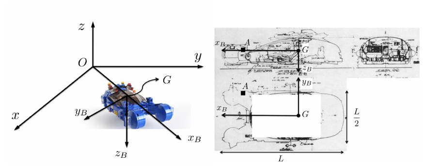
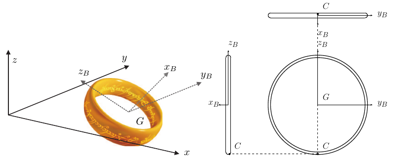
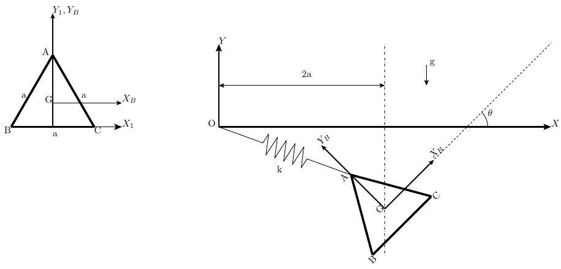
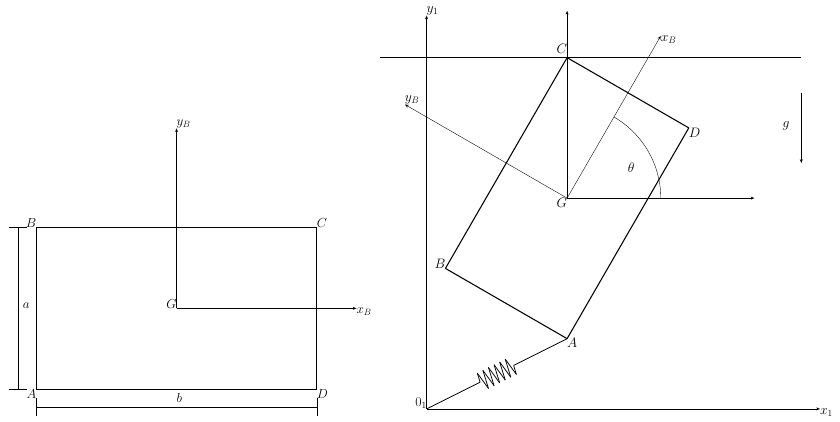
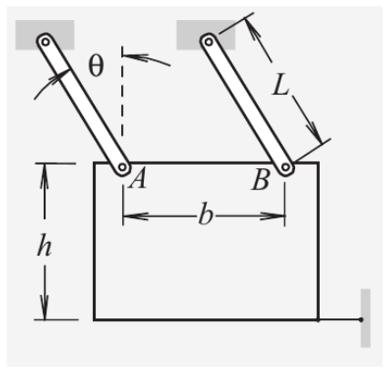
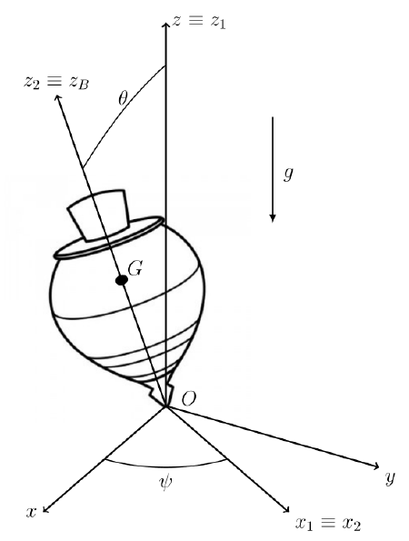
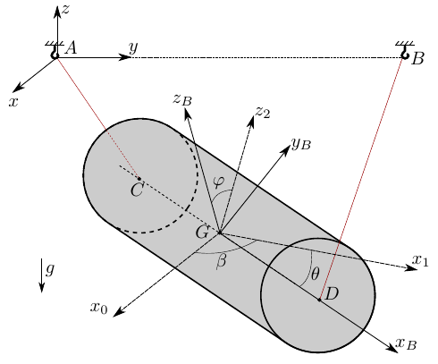
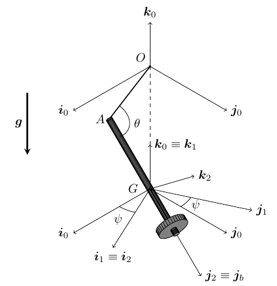

Topic 7: Momentum, Kinetic Energy and Rigid Body Dynamics - Problem Sets
Linear momentum, angular momentum and kinetic energy
Blade Runner (Spinner)
Los Angeles 2019. Deckard is a special policeman (a blade runner) specialized in “retiring” Nexus 6 replicants. He goes around in a spinner, his flying car. We want to analyze the flying motion of the spinner with respect to an inertial reference frame $S_0 : \{O; B_0\}$ with $B_0 : \{\mathbf{i}, \mathbf{j}, \mathbf{k}\}$ as shown in the figure. We are going to consider the spinner as a rigid body. A body-fixed reference frame $S_B : \{G; B_B\}$ with $B_B : \{\mathbf{i}_B, \mathbf{j}_B, \mathbf{k}_B\}$ is also defined. In the instant considered,
* the center of mass $G$ and the axes $Gx_B$ and $Gy_B$ are contained in the plane $Oxy$, * the distance between $G$ and $O$ is $3L/2$, where $L$ is the length of the spinner as indicated in the figure, * the angle between the axis $Ox$ and $Gx_B$ is $45^\circ$ * the velocity of $G$ is $\boldsymbol{v}_0^G = 3\sqrt{2}\Omega L(-\boldsymbol{i} + \boldsymbol{j})/4$, * the velocity of point $A$ of the body is $\boldsymbol{v}_0^A = \Omega L(\boldsymbol{i}_B - 8\boldsymbol{j}_B + \sqrt{2}\boldsymbol{k}_B)/4$, where the position vector of $A$ is given by $\boldsymbol{r}_B^A = (2\boldsymbol{i}_B + \boldsymbol{j}_B)L/4$, * we also know that $\boldsymbol{v}_0^G \cdot \boldsymbol{\omega}_{B0} = 0$, where $\boldsymbol{\omega}_{B0}$ is the angular velocity of the spinner.
The mass of the spinner is $M$. The inertia tensor about $G$ is
where $B$, $C$, $D$, $E$ and $F$ are known constants. Compute
-
(a)
The instantaneous axis of rotation with respect to $S_0$.
-
(b)
The kinetic energy of the spinner with respect to $S_0$.
-
(c)
The angular momentum of the spinner about $G$ with respect to $S_0$.
-
(d)
The angular momentum of the spinner about $A$ with respect to $S_0$.

Worked Solution [ Click to Expand ]
Reference Frames, Bases and Degrees of Freedom
- Physical system: the spinner, one rigid body $b$ of mass $M$, observed at a single instant from an inertial frame.
- Fixed frame: $S_0\{O; \mathcal B_0\}$ with the right-handed basis $\{\mathbf i, \mathbf j, \mathbf k\}$; read from the figure, $\mathbf k$ points up, $\mathbf j$ to the right and $\mathbf i$ towards the viewer.
- Body frame: $S_B\{G; \mathcal B_B\}$ with origin at the centre of mass $G$ and basis $\{\mathbf i_B, \mathbf j_B, \mathbf k_B\}$. Read from the figure: $\mathbf k_B$ points vertically down (the side view draws it from $G$ downwards), $\mathbf i_B$ lies in the plane $Oxy$ at 45 degrees from $Ox$ and points to the front of the car, and $\mathbf j_B$ completes the right-handed triad.
- Degrees of freedom: a free rigid body has six (three for the position of $G$, three for the attitude). The problem is a snapshot: the velocity field at this instant is fixed by six scalars, the velocity of $G$ and the angular velocity $\boldsymbol\omega_{B0}$ (Notes.pdf, Sec. 9.1.3).
- Basis of work: every vector is written in $\mathcal B_B$, because the inertia tensor and the data of $A$ are given there.
| Datum | Value | SI unit |
|---|---|---|
| Mass of the spinner | $M$ | kg |
| Length of the spinner | $L$ | m |
| Angular rate scale | $\Omega$ | rad/s |
| Distance $OG$ | $3L/2$, with $G$ in the plane $Oxy$ | m |
| Angle from $Ox$ to $Gx_B$ | $45^\circ$, with $Gx_B$ and $Gy_B$ in the plane $Oxy$ | rad |
| Velocity of $G$ | $\mathbf v_0^G = \tfrac{3\sqrt2}{4}\,\Omega L\,(-\mathbf i + \mathbf j)$ | m/s |
| Position of $A$ from $G$ | $\mathbf r_G^A = \tfrac{L}{4}\,(2\,\mathbf i_B + \mathbf j_B)$ | m |
| Velocity of $A$ | $\mathbf v_0^A = \tfrac{\Omega L}{4}\,(\mathbf i_B - 8\,\mathbf j_B + \sqrt2\,\mathbf k_B)$ | m/s |
| Extra condition | $\mathbf v_0^G\cdot\boldsymbol\omega_{B0} = 0$ | m rad/s$^2$ |
| Inertia tensor about $G$ in $\mathcal B_B$ | $ML^2\,[B, 0, E;\ 0, C, F;\ E, F, D]$, constants $B$, $C$, $D$, $E$, $F$ | kg m$^2$ |
- Unknowns: the three components of $\boldsymbol\omega_{B0}$, a point $I$ of the instantaneous axis of rotation, the kinetic energy $T_0$, and the angular momenta $\mathbf H_{G,0}$ and $\mathbf H_{A,0}$.
- Count of equations: the velocity field between $G$ and $A$ gives three scalar equations, but its component along the segment $GA$ contains no angular velocity (it is a consistency check of the data). The other two fix two components of $\boldsymbol\omega_{B0}$; the condition on the scalar product fixes the third.
- Datum not used: the distance $OG$ is not needed, because every quantity asked for is referred to $G$ or $A$, and the axis of rotation is located from $G$.
Change of Basis, Position Vectors and Constraint Kinematics
The basis $\mathcal B_B$ is reached from $\mathcal B_0$ by two simple rotations: a turn of 45 degrees about $\mathbf k$ (it brings an intermediate axis $\mathbf i_1$ onto the direction of $Gx_B$) and a half turn about $\mathbf i_1$ (it sends the vertical axis downwards, as the figure draws $\mathbf k_B$).
Two simple rotations
View from above, with $\mathbf k$ out of the paper (⊙), $\mathbf i$ to the right and $\mathbf j$ up, since $\mathbf i\times\mathbf j = \mathbf k$. The turn from $Ox$ to $Gx_B$ is counterclockwise in this view, so its angle is positive.
Units: dimensionless
Meaning: the intermediate axis $\mathbf i_1$ points along the length of the spinner, as $Gx_B$ does in the figure; the vertical has not moved yet.
View with $\mathbf i_1$ out of the paper (⊙), $\mathbf j_1$ to the right and $\mathbf k_1$ up, since $\mathbf j_1\times\mathbf k_1 = \mathbf i_1$. A half turn sends both axes of the plane of the view to their opposites.
Units: dimensionless
Meaning: the body basis has $\mathbf i_B$ along the car, $\mathbf j_B$ horizontal across it, and $\mathbf k_B$ pointing to the ground. The determinant 1 confirms that the triad read from the figure is right-handed.
Velocity of G in the body basis
Units: $[\mathrm{T^{-1}}][\mathrm L] = [\mathrm{L\,T^{-1}}]$
Meaning: at this instant the centre of mass moves sideways, perpendicular to the length of the car, with speed 1.5 times the product of the rate and the length.
Angular velocity from the velocity field
Write the unknown angular velocity as $\boldsymbol\omega_{B0} = p\,\mathbf i_B + q\,\mathbf j_B + r\,\mathbf k_B$.
Units: $[\mathrm{L\,T^{-1}}] = [\mathrm{T^{-1}}][\mathrm L]$, so $p$, $q$, $r$ are in $[\mathrm{T^{-1}}]$
Meaning: the $\mathbf j_B$ equation repeats the $\mathbf i_B$ one because the two velocities have equal projections on the segment $GA$ (Eq. 9.7): the data are those of a rigid body. A rotation about $GA$ itself moves neither point, so one more condition is needed.
Units: $[\mathrm{T^{-1}}]$
Meaning: the condition says that the slip velocity (the component of the velocity of any body point along the angular velocity, Eq. 9.5) is zero: the spinner is in pure rotation at this instant. It turns about an axis in the vertical plane that contains its length.
Instantaneous axis of rotation
Units: $[\mathrm{T^{-1}}][\mathrm{L\,T^{-1}}]/[\mathrm{T^{-2}}] = [\mathrm L]$; the parameter $\lambda$ is a length
Meaning: $\mathbf{GI}$ is perpendicular to the angular velocity (its scalar product with it is $-\sqrt2 + \sqrt2 = 0$). Since $\mathbf k_B$ points down, $-\mathbf k_B$ points up: the axis passes behind and above $G$, at a distance of $\sqrt3\,L/2$ from it, in the vertical plane of the car.
Center of Mass and Inertia Tensor
The centre of mass $G$ is the origin of $S_B$, and the inertia tensor about it is a datum of the statement: the mass distribution of the spinner is not given, so no integral can be written. The box below only reads the given matrix with the definitions of the course, which identifies each constant.
Units: $[\mathrm M][\mathrm L^2]$ (kg m$^2$); $B$ to $F$ are pure numbers
Meaning: the zero product means that the integral of the product of the coordinates along $\mathbf i_B$ and $\mathbf j_B$ over the car vanishes; the axes of $S_B$ are not principal axes, because $E$ and $F$ couple the vertical axis with the other two.
Linear Momentum, Angular Momentum and Kinetic Energy
Units: $[\mathrm M][\mathrm{L\,T^{-1}}]$ (kg m/s)
Meaning: the momentum is that of a particle of mass $M$ moving with $G$; it is needed for the change of pole from $G$ to $A$.
Units: $[\mathrm M][\mathrm L^2][\mathrm{T^{-1}}]$ (kg m$^2$/s)
Meaning: the angular momentum is not parallel to the angular velocity: the products of inertia $E$ and $F$ add components along $\mathbf j_B$ and change the ratio of the other two.
Units: $[\mathrm M][\mathrm L^2][\mathrm{T^{-2}}]$ (J)
Meaning: the term 9 is the energy of the translation of $G$; the rest is the energy of the rotation about $G$, which does not contain $C$ or $F$ because the angular velocity has no $\mathbf j_B$ component.
Units: $[\mathrm M][\mathrm L^2][\mathrm{T^{-1}}]$ in both terms
Meaning: the change of pole adds the moment of the momentum of $G$ about $A$; both $\mathbf r_A^G$ and the momentum lie in the plane of $\mathbf i_B$ and $\mathbf j_B$, so the extra term is along $\mathbf k_B$ only.
Free-Body Diagram and Equations of Motion
This section does not apply: the statement describes the motion at one instant and asks for no force or equation of motion.
Answers and Checks
| Asked | Answer |
|---|---|
| (a) Instantaneous axis of rotation | through $I$ with $\mathbf{GI} = -\tfrac{L}{2}(\mathbf i_B + \sqrt2\,\mathbf k_B)$, parallel to $\boldsymbol\omega_{B0} = \Omega(\sqrt2\,\mathbf i_B - \mathbf k_B)$; pure rotation (zero slip) |
| (b) Kinetic energy | $T_0 = \tfrac{M\Omega^2L^2}{8}(8B + 4D - 8\sqrt2\,E + 9)$ |
| (c) Angular momentum about $G$ | $\mathbf H_{G,0} = M\Omega L^2[(\sqrt2\,B - E)\mathbf i_B - F\,\mathbf j_B + (\sqrt2\,E - D)\mathbf k_B]$ |
| (d) Angular momentum about $A$ | $\mathbf H_{A,0} = M\Omega L^2[(\sqrt2\,B - E)\mathbf i_B - F\,\mathbf j_B + (\sqrt2\,E - D + \tfrac34)\mathbf k_B]$ |
Check against the official key: the key (Problems.pdf, p. 78) prints the same point $I$, the same angular velocity, the same kinetic energy and the same two angular momenta, term by term. Match.
Units: $[\mathrm{L\,T^{-1}}]$
Meaning: the three data and the condition on $G$ are reproduced exactly by the angular velocity found.
Limiting cases and consistency:
- Principal axes. If the products of inertia vanished ($E$ and $F$ zero), the angular momentum about $G$ would have components $\sqrt2\,B$ and $-D$ only, in the same plane as the angular velocity, and the rotational energy would be the sum of the two principal contributions $2B$ and $D$.
- Point of zero velocity. The kinetic energy computed about the point $I$, where the velocity is zero, is the rotational energy only, with the inertia tensor about $I$; the Steiner term from $G$ to $I$ contributes one half of the mass, times the squared distance from $G$ to $I$ (three quarters of the squared length), times the squared angular speed (three times the squared rate), because $\mathbf{GI}$ is perpendicular to the angular velocity. That product is nine eighths of $M\Omega^2L^2$, the translational term found above.
- Dimensions. Every term of the energy carries $M\Omega^2L^2$ and every angular momentum $M\Omega L^2$; the constants $B$ to $F$ are pure numbers.
One problem to rule them all (One Ring)
We want to analyze the motion of the ring with respect to an inertial reference frame $S_0 : \{O; B_0\}$ (with unit vectors $\boldsymbol{i}$, $\boldsymbol{j}$ and $\boldsymbol{k}$) as shown in the figure. We are going to consider the ring as a rigid body, with a body-fixed reference frame $S_B : \{G; B_B\}$ (with unit vectors $\boldsymbol{i}_B$, $\boldsymbol{j}_B$ and $\boldsymbol{k}_B$) attached to it. In the instant considered,
* the ring is rolling without slipping. * the centre of mass $G$ and the axes $Gx_B$ and $Gz_B$ are contained in the plane $Oxz$ * the angle between the axis $Ox$ and $Gx_B$ is $45^\circ$ * the contact point of the ring with the plane $Oxy$ is $C$. The coordinates of $C$ in the body-fixed reference frame are $R(-1, 0, -19)/20$. * the velocity of $G$ is $\boldsymbol{v}_G = \Omega R \left(-\boldsymbol{i} + \frac{\sqrt{5}}{2}\boldsymbol{j} - \frac{9}{10}\boldsymbol{k}\right)$ * the angular velocity fulfills the condition $\boldsymbol{\omega} \cdot \boldsymbol{i}_B = \boldsymbol{\omega} \cdot \boldsymbol{k}_B$
The mass of the ring is $M$ and the inertia tensor with respect to the reference frame $S_B$ is approximately given by
where $B$, and $D$ are considered as constants.
-
(a)
Compute the instantaneous axis of rotation
-
(b)
Compute the kinetic energy of the ring and the angular momentum of the ring with respect to $G$ as seen from $S_0$
-
(c)
Assume Mordor is located at the origin and attracts the ring with a force. The force applied at each differential mass is proportional to the differential mass and the distance, with proportionality constant being $\beta$. Compute the force and the moment with respect to $G$ due to the presence of Mordor.
-
(d)
If we know that $B = 2D$ and the moment of inertia with respect to $G$ is $I_G = MR^2$, solve for $B$ and $D$.
...One Ring to rule them all

Worked Solution [ Click to Expand ]
Reference Frames, Bases and Degrees of Freedom
- Physical system: the ring, one rigid body of mass $M$ and radius $R$, rolling without slipping on the plane $Oxy$; parts (a) and (b) are a snapshot, part (c) adds the attraction of Mordor, part (d) the values of the inertia constants.
- Fixed frame: $S_0\{O; \mathcal B_0\}$, basis $\{\mathbf i, \mathbf j, \mathbf k\}$, with $\mathbf k$ normal to the ground plane $Oxy$ and pointing up (read from the figure).
- Body frame: $S_B\{G; \mathcal B_B\}$ at the centre of the ring, basis $\{\mathbf i_B, \mathbf j_B, \mathbf k_B\}$. Read from the side views of the figure: the ring lies in the plane $Gy_Bz_B$, and $\mathbf i_B$ is the axis of the ring (normal to its plane). At this instant $Gx_B$ and $Gz_B$ are in the plane $Oxz$, $\mathbf i_B$ leans up and towards positive $x$, $\mathbf k_B$ up and towards negative $x$, and $\mathbf j_B$ is parallel to $\mathbf j$.
- Degrees of freedom: a free rigid body has six. Keeping a point of the ring on the plane removes one; rolling without slipping adds the two conditions of zero tangential velocity at the contact point, which restrict velocities only (they are not integrable). At an instant, the condition of rolling makes the velocity of the body point $C$ in contact zero.
- Basis of work: $\mathcal B_B$, where the inertia tensor and the coordinates of $C$ are given; the results are also written in $\mathcal B_0$ where it helps.
| Datum | Value | SI unit |
|---|---|---|
| Mass, radius of the ring | $M$, $R$ | kg, m |
| Angle from $Ox$ to $Gx_B$ | $45^\circ$, with $Gx_B$, $Gz_B$ and $G$ in the plane $Oxz$ | rad |
| Contact point $C$ in $S_B$ | $\mathbf r_G^C = \tfrac{R}{20}(-1, 0, -19)_B$, on the plane $Oxy$ | m |
| Velocity of $G$ | $\mathbf v_0^G = \Omega R\,(-\mathbf i + \tfrac{\sqrt5}{2}\,\mathbf j - \tfrac{9}{10}\,\mathbf k)$ | m/s |
| Condition on the angular velocity | $\boldsymbol\omega_{B0}\cdot\mathbf i_B = \boldsymbol\omega_{B0}\cdot\mathbf k_B$ | rad/s |
| Inertia tensor about $G$ | $MR^2\,\mathrm{diag}(B, D, D)$ in $\mathcal B_B$ | kg m$^2$ |
| Attraction of Mordor | force on each mass element proportional to $dm$ and to its distance from $O$, constant $\beta$ | N/(kg m) |
- Unknowns: the three components of $\boldsymbol\omega_{B0}$ and the instantaneous axis (a); $T_0$ and $\mathbf H_{G,0}$ (b); the force and moment about $G$ of the attraction (c); the constants $B$ and $D$ (d).
- Count of equations: the zero velocity of $C$ gives three scalar equations, one of which contains no angular velocity (a check of the data); the condition of the statement closes the system.
Change of Basis, Position Vectors and Constraint Kinematics
The body basis: one rotation about j
View of the plane $Oxz$ with $\mathbf i$ to the right and $\mathbf k$ up. The vector out of the paper is then right times up, $\mathbf i\times\mathbf k = -\mathbf j$, so $\mathbf j$ points into the paper (⊗). The figure turns $Gx_B$ counterclockwise by 45 degrees from $Ox$: a positive rotation about the axis out of the paper, $-\mathbf j$.
Units: dimensionless
Meaning: the ring is tilted by 45 degrees: its axis $\mathbf i_B$ and its diameter $\mathbf k_B$ make 45 degrees with the ground; the diameter $\mathbf j_B$ stays horizontal.
Position of the contact point and height of G
Units: $[\mathrm L]$
Meaning: the centre of the tilted ring is at the height $R/\sqrt2$, and the contact point lies slightly to the side of the ring (the component $-R/20$ along the axis $\mathbf i_B$ is the half width of the band). The abscissa $x_G$ is not given by the statement and stays as a symbol.
Rolling condition and angular velocity
Units: $[\mathrm{L\,T^{-1}}]$
Meaning: the centre moves against the axis of the ring and along the horizontal diameter $\mathbf j_B$, with a small component along $\mathbf k_B$.
Units: $[\mathrm{L^2\,T^{-1}}]$
Meaning: the velocity of the centre is perpendicular to the segment from the centre to the contact point, as it must be when the contact point is at rest.
The condition of the statement lets the angular velocity be written as $\boldsymbol\omega_{B0} = p\,\mathbf i_B + q\,\mathbf j_B + p\,\mathbf k_B$.
Units: $[\mathrm{L\,T^{-1}}] = [\mathrm{T^{-1}}][\mathrm L]$, so $p$ and $q$ are in $[\mathrm{T^{-1}}]$
Meaning: the component along the axis $\mathbf i_B$ is the spin of the ring as it rolls; the components along the diameters $\mathbf j_B$ and $\mathbf k_B$ describe how its plane turns and tilts.
Units: $[\mathrm{T^{-1}}]$
Meaning: the equal components along $\mathbf i_B$ and $\mathbf k_B$ cancel along $\mathbf i$: the angular velocity has no component along $Ox$ and lies in the vertical plane through $\mathbf j$ and $\mathbf k$.
Instantaneous axis of rotation
Units: $[\mathrm L]$; the parameter $\lambda$ is a length
Meaning: the ring turns, at this instant, about the line through the contact point parallel to the angular velocity. The motion is a pure rotation: every body point moves perpendicular to that line.
Center of Mass and Inertia Tensor
The centre of mass is the centre $G$ of the ring (the planes $Gx_By_B$, $Gx_Bz_B$ and $Gy_Bz_B$ are planes of symmetry of the band). The statement gives the inertia tensor about $G$ in $\mathcal B_B$ with two constants; part (d) fixes them. The relation used is the sum of the three moments of inertia; a thin circular wire is then used as an independent check.
Units: $B$ and $D$ are pure numbers; the tensor is in kg m$^2$
Meaning: the moment about the axis of the ring is twice the moment about a diameter, as for any flat body (the moment about the normal axis is the sum of the two in-plane ones).
Model the ring as a wire of radius $R$ in the plane $Gy_Bz_B$, with the point at angle $\phi$ at $y_B = R\cos\phi$ and $z_B = R\sin\phi$.
Units: $[\mathrm M][\mathrm L^2]$
Meaning: the thin-wire model gives exactly the values of part (d), and its polar moment, half of the sum, is $MR^2$, the datum of the statement. The products of inertia vanish because the three coordinate planes are planes of symmetry.
Linear Momentum, Angular Momentum and Kinetic Energy
Units: $[\mathrm M][\mathrm L^2][\mathrm{T^{-1}}]$
Meaning: with $B$ different from $D$ the angular momentum is not parallel to the angular velocity: the spin about the axis of the ring is weighted by the larger moment $B$.
Units: $[\mathrm M][\mathrm L^2][\mathrm{T^{-2}}]$ (J)
Meaning: with the values of part (d), one and one half, the energy is $\tfrac{4303}{1350}\,M\Omega^2R^2 \approx 3.187\,M\Omega^2R^2$: a little less than half of it is translation of the centre and the rest is rotation.
Free-Body Diagram and Equations of Motion
Only the attraction of Mordor is asked for (part (c)); the weight and the contact force at $C$ are not part of the question, and no equation of motion is requested.
Units: $\beta$ in $[\mathrm{T^{-2}}]$ (N per kg per m), so $[\mathrm{T^{-2}}][\mathrm M][\mathrm L] = [\mathrm{M\,L\,T^{-2}}]$
Meaning: the distributed attraction acts like a single spring of stiffness $\beta M$ between $O$ and the centre of mass.
Units: $[\mathrm{M\,L^2\,T^{-2}}]$ (N m)
Meaning: like uniform gravity, this attraction is equivalent to a single force applied at $G$; it cannot change the angular momentum about the centre of mass.
Answers and Checks
| Asked | Answer |
|---|---|
| (a) Instantaneous axis of rotation | through the contact point $C$, at $(x_G + \tfrac{9\sqrt2}{20}R)\,\mathbf i$, parallel to $\boldsymbol\omega_{B0} = -\Omega(\tfrac{5\sqrt5}{9}\mathbf i_B + \sqrt2\,\mathbf j_B + \tfrac{5\sqrt5}{9}\mathbf k_B) = -\Omega(\sqrt2\,\mathbf j + \tfrac{5\sqrt{10}}{9}\mathbf k)$; zero slip |
| (b) Kinetic energy | $T_0 = M\Omega^2R^2[\tfrac{153}{100} + \tfrac{125B + 287D}{162}]$; with part (d), $\tfrac{4303}{1350}M\Omega^2R^2$ |
| (b) Angular momentum about $G$ | $\mathbf H_{G,0} = -M\Omega R^2(\tfrac{5\sqrt5}{9}B\,\mathbf i_B + \sqrt2\,D\,\mathbf j_B + \tfrac{5\sqrt5}{9}D\,\mathbf k_B)$ |
| (c) Force and moment of Mordor | $\mathbf F_{\mathcal M} = -\beta M\,\mathbf r_0^G$, $\mathbf M_{G,\mathcal M} = \mathbf 0$ |
| (d) Inertia constants | $B = 1$, $D = 1/2$ |
Check against the official key: the key (Problems.pdf, p. 78) prints only part (c): the force is $\beta M\,\mathbf r_0^G$ and the moment about $G$ is zero. The moment matches. The force matches in modulus and line of action; its sign differs.
Limiting cases and consistency:
- Rolling check. The velocity of $G$ found from the angular velocity and the contact point, through the velocity field, reproduces the datum in all three components (the $\mathbf k_B$ component was not used to find $q$ and agrees with it).
- Speed against distance to the axis. In a pure rotation the speed of $G$ equals the angular speed times the distance from $G$ to the axis. The speed of $G$ is about $1.749\,\Omega R$. The segment from $G$ to $C$ has length about $0.951\,R$ and makes with the angular velocity an angle of cosine about $0.579$, so the distance from $G$ to the axis is about $0.776\,R$; times the angular speed, about $2.255\,\Omega$, it gives $1.749\,\Omega R$ again.
- Thin ring. The values of part (d) are those of a thin circular wire, computed by integration in the inertia section.
Planar and 3D rigid body dynamics, equilibrium and linearized oscillations
Triangle with spring and vertical constraint
The planar equilateral triangle has side length $a$ and uniform mass $m$. It moves in the vertical plane $Oxy$ of the inertial frame $S_0 : \{O, B_0\}$ with $B_0 : \{\boldsymbol{i}, \boldsymbol{j}, \boldsymbol{k}\}$. The vertex $A$ of the triangle is connect [sic] to $O$ by a spring with constant $k$ and zero nominal length. The center of mass $G$ of the triangle is constrained to move along the vertical line $x = 2a$ without friction.
-
(a)
Determine the position of $G$ with respect to the coordinate system $x_1y_1$.
-
(b)
Determine the moment of inertia with respect to point $G$.
-
(c)
Write down the equations of motion for the triangle.
-
(d)
At time $t = 0$, the side $BC$ of the triangle coincides with the axis $Ox$, the vertex $A$ is on the line $x = 2a$ with $y > 0$, and the velocity of $A$ is $\boldsymbol{v}_0^A = u_0\boldsymbol{i} + v_0\boldsymbol{j}$. * i. Obtain the required initial conditions for the equations of the motion. * ii. Determine also the instantaneous axis of rotation at $t = 0$.
-
(e)
Now, we consider a different situation. The triangle is in the equilibrium position and at rest, with the orientation $\theta = \pi/4$. Determine the value of the spring constant $k$, the position of $G$, and the reaction force.
-
(f)
In the equilibrium position computed before, we now fix the position of $G$ and apply a small perturbation to the orientation of the triangle, such that $\theta = \pi/4 + \phi$ and $\phi \ll 1$. Determine the oscillation frequency of the triangle with respect to the equilibrium position.

Worked Solution [ Click to Expand ]
Reference Frames, Bases and Degrees of Freedom
- Physical system: a homogeneous equilateral triangular plate $ABC$ of side $a$ and mass $m$, moving in the vertical plane $Oxy$. The vertex $A$ is tied to $O$ by a spring of stiffness $k$ and zero natural length; the centre of mass $G$ slides without friction along the vertical line through the point at abscissa $2a$. Gravity acts along $-\mathbf j$ (read from the figure).
- Fixed frame: $S_0\{O; \mathcal B_0\}$, $\mathbf i$ horizontal to the right, $\mathbf j$ vertical upwards, $\mathbf k$ out of the paper (⊙). It is inertial.
- Body frames: $S_B\{G; \mathbf i_B, \mathbf j_B, \mathbf k\}$, with $\mathbf j_B$ along the axis of symmetry from $G$ towards $A$ and $\mathbf i_B$ parallel to $BC$, from $B$ towards $C$; and the frame $x_1y_1$ of the left figure, parallel to it, with origin at the midpoint $M$ of $BC$ (read from the figure: $Mx_1$ along $BC$, $My_1$ through $A$).
- Coordinates: the height $y_G$ of $G$ and the angle $\theta$ from $\mathbf i$ to $\mathbf i_B$, positive counterclockwise about $\mathbf k$ (the figure draws it between $OX$ and the line of $GX_B$).
- Degrees of freedom: a rigid body in plane motion has three (two coordinates of $G$ and one angle); the guide fixes the abscissa of $G$, which leaves two, $y_G$ and $\theta$.
- Unknowns of the dynamics: $y_G(t)$, $\theta(t)$ and the guide reaction $R$ (a force along $\mathbf i$, because a smooth guide cannot push along its own direction). Three scalar equations are needed: the two components of the force equation and the component along $\mathbf k$ of the moment equation.
| Datum | Symbol | SI unit |
|---|---|---|
| Side of the triangle | $a$ | m |
| Mass, homogeneous | $m$ | kg |
| Spring stiffness, zero natural length, from $O$ to $A$ | $k$ | N/m |
| Gravity | $g$, along $-\mathbf j$ | m/s$^2$ |
| Guide of $G$ | vertical line at abscissa $2a$, smooth | m |
| Initial velocity of $A$ (part d) | $u_0\,\mathbf i + v_0\,\mathbf j$ | m/s |
| Equilibrium angle (part e) | $\pi/4$ | rad |
Change of Basis, Position Vectors and Constraint Kinematics
View of the plane of motion with $\mathbf k$ out of the paper (⊙), $\mathbf i$ to the right and $\mathbf j$ up; positive $\theta$ is counterclockwise.
Units: the matrix is dimensionless; $\boldsymbol\omega_{B0}$ in $[\mathrm{T^{-1}}]$
Meaning: for $\theta$ equal to zero the side $BC$ is horizontal and $A$ is above it; for $\theta$ equal to $\pi/4$, as in the figure, $A$ is up and to the left of $G$.
Geometry of the triangle
The triangle $MCA$ has its right angle at $M$: hypotenuse $AC$ of length $a$, leg $MC$ of length $a/2$, leg $MA$ equal to the height $h$.
Units: $[\mathrm L]$
Meaning: the vertex $A$ is at two thirds of the height above the base, that is at the distance $a/\sqrt3$ from the centre of mass, along the axis of symmetry.
Position vectors
In the right triangle with hypotenuse $GA$ of length $a/\sqrt3$ and the angle $\theta$ between $GA$ and the vertical (the same angle as between $\mathbf i_B$ and $\mathbf i$), the horizontal leg is the opposite one and the vertical leg the adjacent one.
Units: $[\mathrm L]$
Meaning: these are the components of the vector from $O$ to $A$, so the spring force is $-k$ times them.
Units: $[\mathrm{L\,T^{-1}}]$ and $[\mathrm{L\,T^{-2}}]$
Meaning: the centre of mass only moves vertically; the vertex $A$ adds a velocity perpendicular to $GA$ due to the rotation.
Center of Mass and Inertia Tensor
In $x_1y_1$ the vertices are $B$ at $(-a/2, 0)$, $C$ at $(a/2, 0)$ and $A$ at $(0, h)$. At height $y_1$ the plate spans the horizontal strip from $-w$ to $w$, with the half width $w$ given by similar triangles (it falls linearly from $a/2$ at the base to zero at $A$).
Units: $\sigma$ in kg/m$^2$; $y_{1G}$ in $[\mathrm L]$
Meaning: the centre of mass lies on the axis of symmetry at one third of the height above the base, the point where the three medians meet.
Units: $[\mathrm M][\mathrm L^2]$
Meaning: the moments about the axes through the midpoint of the base; the moment about $Mx_1$ is the largest in the plane because the mass extends up to the height $h$ away from the base.
The vector from $M$ to $G$ is $(0, y_{1G}, 0)$ in $x_1y_1$.
Units: $[\mathrm M][\mathrm L^2]$
Meaning: the moment of inertia about the axis through $G$ normal to the plate, the one that governs the rotation in the plane, is $ma^2/12$. The two in-plane moments are equal, as they must be for a body with threefold symmetry.
Linear Momentum, Angular Momentum and Kinetic Energy
Units: kg m/s, kg m$^2$/s and J
Meaning: the angular momentum about $G$ is normal to the plane because the products of inertia with the normal axis are zero; the energy splits into the vertical translation of $G$ and the rotation about it.
Free-Body Diagram and Equations of Motion
The forces on the triangle, in the inertial frame (no inertia forces):
| Force | Point of application | Expression | Kind |
|---|---|---|---|
| Weight | $G$ | $-mg\,\mathbf j$ | applied |
| Spring | $A$ | $-k\,\mathbf r_0^A = -k(x_A\,\mathbf i + y_A\,\mathbf j)$ | applied (Notes.pdf, Sec. 7.5) |
| Guide reaction | $G$ | $R\,\mathbf i$, $R$ unknown | constraint: smooth, normal to the line |
Units: $[\mathrm M][\mathrm{L\,T^{-2}}]$ and $[\mathrm{M\,T^{-2}}][\mathrm L]$, both N
Meaning: the horizontal pull of the spring is balanced by the guide at every instant; the vertical motion of $G$ feels the weight and the vertical pull of the spring, which depends on the attitude through $y_A$.
The pole is $G$: the weight and the guide reaction pass through it, so they give no moment, and the extra term of Eq. 12.13 vanishes because the velocity of the pole is that of $G$ itself.
Units: $[\mathrm M][\mathrm L][\mathrm{T^{-2}}]$ on the left; $[\mathrm{M\,T^{-2}}][\mathrm L]$ on the right
Meaning: the spring turns the triangle whenever the line $OA$ does not pass through $G$; the moment is zero exactly when $OA$ is aligned with $GA$.
Part (d): initial conditions and instantaneous axis
Units: m, m/s, rad, rad/s
Meaning: two second-order equations need four initial conditions. A horizontal velocity of $A$ to the right can only come from a clockwise rotation, since $G$ cannot move horizontally.
Units: $[\mathrm{T^{-1}}][\mathrm{L\,T^{-1}}]/[\mathrm{T^{-2}}] = [\mathrm L]$
Meaning: the axis is normal to the plane, on the horizontal line through $G$ (perpendicular to its vertical velocity). If $u_0$ vanishes the plate translates and the axis goes to infinity.
Part (e): equilibrium at theta = pi/4
Units: m; N/m; N
Meaning: in equilibrium the spring passes through $G$ (its line $OA$ continues the segment $GA$ at 45 degrees), so the spring force is along the diagonal at 45 degrees: its vertical part carries the weight and its horizontal part, equal in size, is taken by the guide.
Part (f): small oscillations with G fixed
With $G$ fixed at the equilibrium height, the support at $G$ is a force applied at $G$ and has no moment about it; the moment equation keeps its form with the height of $G$ frozen.
Units: $[\mathrm{M\,T^{-2}}]/[\mathrm M] = [\mathrm{T^{-2}}]$, so the frequency is in rad/s
Meaning: the coefficient is positive, so the equilibrium is stable for rotations about the fixed $G$: the spring pulls $A$ back towards the line $OG$ and the triangle oscillates harmonically.
Answers and Checks
| Asked | Answer |
|---|---|
| (a) Position of $G$ in $x_1y_1$ | $(0, \tfrac{\sqrt3}{6}a)$: on the axis of symmetry at one third of the height |
| (b) Moment of inertia about $G$ | $I_G = \tfrac{ma^2}{12}$ (normal axis); in-plane moments $\tfrac{ma^2}{24}$ each |
| (c) Equations of motion | $m\ddot y_G = -mg - k(y_G + \tfrac{\sqrt3}{3}a\cos\theta)$; $ma\ddot\theta = 4\sqrt3\,k(y_G\sin\theta + 2a\cos\theta)$; reaction $R = ka(2 - \tfrac{\sqrt3}{3}\sin\theta)$ |
| (d.i) Initial conditions | $y_G = \tfrac{\sqrt3}{6}a$, $\dot y_G = v_0$, $\theta = 0$, $\dot\theta = -\tfrac{\sqrt3 u_0}{a}$ |
| (d.ii) Axis at $t = 0$ | normal to the plane through $(2a + \tfrac{\sqrt3 a v_0}{3u_0}, \tfrac{\sqrt3}{6}a)$ |
| (e) Equilibrium at $\pi/4$ | $y_G = -2a$, $k = \tfrac{mg}{a(2 - \sqrt6/6)}$, $R = ka(2 - \tfrac{\sqrt6}{6}) = mg$ along $\mathbf i$ |
| (f) Frequency with $G$ fixed | $\Omega = \sqrt{8\sqrt6\,k/m}$ |
Check against the official key: the key (Problems.pdf, p. 78) prints the same two equations of motion, the same reaction, the same initial conditions, the same equilibrium values and the same linearized equation and frequency. Match, with one misprint of the key noted below.
Units: $[\mathrm{M\,L^2\,T^{-3}}]$ (W)
Meaning: the two equations of motion conserve the mechanical energy, as they must for a smooth guide and conservative applied forces; this is a first integral of the problem.
Limiting cases and consistency:
- No spring. With zero stiffness the equations reduce to free fall of $G$ along the guide and a constant rate of rotation, the motion of a plate under its weight alone with the line of action through $G$.
- Equilibrium alignment. At the equilibrium of part (e), $A$ is at about $(1.592\,a, -1.592\,a)$ and $G$ at $(2a, -2a)$: both lie on the line through $O$ at minus 45 degrees, so the line of the spring force passes through $G$ and has no moment about it, as the moment equation requires.
- Dimensions. Every term of the equations carries N (force equation) or N m (moment equation multiplied by $a$); the frequency is in rad/s.
Rectangle with spring hanging from a corner
We consider the planar motion in a vertical plane $OXY$ of a heavy homogeneous rectangle of mass $m$, length $a$ and width $b = \sqrt{3}a$. The motion of the rectangle is influenced by the spring of constant $k$ which connects the origin of the inertial reference frame $O_1X_1Y_1$ to the vertex $A$ of the rectangle, as shown in the figure. In addition, the vertex $C$ of the rectangle is constrained to move along the horizontal line $y = 5a/4$.
-
(a)
Determine the moment of inertia with respect to the center of mass of the rectangle $G$.
-
(b)
If at time $t = 0$, the side $BC$ of the rectangle is located on the axis $O_1Y_1$, the vertex $A$ has a positive $x_1$ component and the velocity of the vertex $A$ is $\boldsymbol{v}_A = u_0\boldsymbol{i}_1 + v_0\boldsymbol{j}_1$ (where $\boldsymbol{i}_1,\boldsymbol{j}_1$ are the unit vectors along the axes $O_1X_1$ and $O_1Y_1$). * Write down the equations of motion for the rectangle. * Specify the initial conditions that need to be imposed on the previous equations in order to completely specify the problem. Determine also the instantaneous axis of rotation at $t = 0$.
-
(c)
If at time $t = 0$, the rectangle is at rest, the value of the angle is $\theta = \pi/3$ and we know that the body is in equilibrium. Determine the position of the centre of mass and the reaction force.
-
(d)
In the equilibrium position computed before, we now do the following actions: * i. fix the position of $G$ * ii. release the vertex $C$ from the constraint * iii. apply a small perturbation to the orientation of the rectangle. Such that $\theta = \pi/3 + \phi$ and $\phi \ll 1$.
Determine the frequency of oscillation of the rectangle with respect to the equilibrium position.

Worked Solution [ Click to Expand ]
Reference Frames, Bases and Degrees of Freedom
- Physical system: a homogeneous rectangular plate $ABCD$ of mass $m$, side $AB$ of length $a$ and side $AD$ of length $b$, with $b$ equal to $\sqrt3\,a$, moving in a vertical plane. A spring of stiffness $k$ joins the origin $O_1$ to the vertex $A$; the vertex $C$ slides along the horizontal line at height $5a/4$. Gravity acts along $-\mathbf j_1$ (read from the figure).
- Natural length of the spring: the statement gives none; it is taken as zero, as in the rest of the course (Notes.pdf, Sec. 7.5), so the spring force is $-k$ times the vector from $O_1$ to $A$.
- Guide: the statement does not mention friction; the line is taken as smooth, so its reaction on $C$ is normal to it, along $\mathbf j_1$.
- Fixed frame: $S_0\{O_1; \mathbf i_1, \mathbf j_1, \mathbf k_1\}$, with $\mathbf i_1$ horizontal to the right, $\mathbf j_1$ up and $\mathbf k_1$ out of the paper (⊙). It is inertial.
- Body frame: $S_B\{G; \mathbf i_B, \mathbf j_B, \mathbf k_1\}$ with $\mathbf i_B$ parallel to $AD$ (from $A$ to $D$) and $\mathbf j_B$ parallel to $AB$ (from $A$ to $B$), as in the left figure.
- Coordinates: the abscissa $x_G$ of $G$ and the angle $\theta$ from $\mathbf i_1$ to $\mathbf i_B$, positive counterclockwise (the figure draws it from the horizontal through $G$ to $Gx_B$). The height $y_G$ follows from the guide.
- Degrees of freedom: three for a plane motion, minus one for the guide: two, $x_G$ and $\theta$.
- Unknowns of the dynamics: $x_G(t)$, $\theta(t)$ and the guide reaction $N$; three scalar equations (two force components and one moment component) are needed.
| Datum | Symbol | SI unit |
|---|---|---|
| Mass, homogeneous | $m$ | kg |
| Sides | $AB = a$, $AD = b = \sqrt3\,a$ | m |
| Spring from $O_1$ to $A$ | stiffness $k$, zero natural length | N/m |
| Guide of $C$ | horizontal line at height $5a/4$, smooth | m |
| Gravity | $g$, along $-\mathbf j_1$ | m/s$^2$ |
| Initial velocity of $A$ (part b) | $u_0\,\mathbf i_1 + v_0\,\mathbf j_1$ | m/s |
| Equilibrium angle (part c) | $\pi/3$ | rad |
Change of Basis, Position Vectors and Constraint Kinematics
View of the plane with $\mathbf k_1$ out of the paper (⊙), $\mathbf i_1$ to the right and $\mathbf j_1$ up; positive $\theta$ is counterclockwise.
Units: the matrix is dimensionless; $\boldsymbol\omega_{B0}$ in $[\mathrm{T^{-1}}]$
Meaning: for $\theta$ equal to $\pi/2$ the long side $AD$ is vertical; for $\theta$ equal to $\pi/3$, as in the figure, $C$ is straight above $G$.
The half diagonal GC
In the right triangle with legs $b/2$ along $\mathbf i_B$ and $a/2$ along $\mathbf j_B$ and hypotenuse $GC$, the angle at $G$ between $\mathbf i_B$ and $GC$ is the one whose tangent is the opposite leg over the adjacent leg.
Units: $[\mathrm L]$; angles dimensionless
Meaning: the corners $A$ and $C$ are the two ends of a diagonal of length $2a$ through $G$, which makes the angle $\beta$ with the horizontal. All the geometry of the problem depends on $\theta$ only through $\beta$.
Units: $[\mathrm L]$, $[\mathrm{L\,T^{-1}}]$, $[\mathrm{L\,T^{-2}}]$
Meaning: the velocity of $C$ comes out horizontal, which checks that the height of $G$ was written correctly; the vertical motion of $G$ is slaved to the rotation.
Center of Mass and Inertia Tensor
The centre of mass is the centre of the rectangle: the two midlines are axes of symmetry. In $S_B$ the plate covers the coordinates from $-b/2$ to $b/2$ along $\mathbf i_B$ and from $-a/2$ to $a/2$ along $\mathbf j_B$.
Units: $[\mathrm M][\mathrm L^2]$
Meaning: the moment about the axis normal to the plate, which governs the plane rotation, is $ma^2/3$; it equals $m$ times the squared half diagonal over three, because the squared half diagonal is $a^2$ here.
Linear Momentum, Angular Momentum and Kinetic Energy
Units: kg m$^2$/s and J
Meaning: the guide makes the rotation drag the centre of mass up and down, which adds the term in the squared cosine to the rotational inertia.
Free-Body Diagram and Equations of Motion
| Force | Point of application | Expression | Kind |
|---|---|---|---|
| Weight | $G$ | $-mg\,\mathbf j_1$ | applied |
| Spring | $A$ | $-k\,\mathbf r_0^A = -k(x_A\,\mathbf i_1 + y_A\,\mathbf j_1)$ | applied (Notes.pdf, Sec. 7.5) |
| Guide reaction | $C$ | $N\,\mathbf j_1$, $N$ unknown | constraint: smooth, normal to the line |
Units: N in every term
Meaning: only the spring pushes horizontally; the guide reaction carries the weight and the vertical pull of the spring, plus the force needed to give $G$ its vertical acceleration.
The pole is $G$: the weight passes through it, and the extra term of Eq. 12.13 vanishes for the pole $G$.
Units: N m in every term
Meaning: the guide reaction turns the plate with the arm $a\cos\beta$, the horizontal distance from $G$ to $C$; the spring turns it unless its line passes through $G$.
Units: N and N m
Meaning: two coupled second-order equations for the two degrees of freedom; the reaction then follows from the force box at every instant.
Part (b): initial conditions and instantaneous axis
Units: m, m/s, rad, rad/s
Meaning: four conditions for two second-order equations; the vertical velocity of $A$ fixes the rate of rotation, because $C$ cannot move vertically and $A$ is $2a\cos\beta$ to the side of it.
Units: $[\mathrm L]$
Meaning: the axis lies on the vertical through $C$, the axis $O_1Y_1$, as it must: $C$ moves horizontally, so the centre of rotation is on the normal to its velocity. If $v_0$ vanishes the plate translates.
Part (c): equilibrium at theta = pi/3
At $\theta$ equal to $\pi/3$ the angle of the half diagonal is $\beta$ equal to $\pi/2$: $C$ is straight above $G$ and $A$ straight below it.
Units: m and N
Meaning: in equilibrium $O_1$, $A$, $G$ and $C$ lie on the vertical axis $O_1Y_1$, so the three forces are vertical and collinear and the moment equation holds for any stiffness. The spring, stretched by $3a/4$, pulls $A$ up; the guide carries the rest of the weight (it pushes up while the stiffness is below $4mg/(3a)$, and must pull down above it).
Part (d): small oscillations with G fixed and C released
With $G$ held at its equilibrium position and $C$ free, the only force with a moment about $G$ is the spring; the support at $G$ acts at the pole.
Units: $[\mathrm{M\,T^{-2}}]/[\mathrm M] = [\mathrm{T^{-2}}]$; the frequency in rad/s
Meaning: the exact equation is that of a pendulum, with the sine of the perturbation in place of the perturbation; the equilibrium is stable and the small oscillations are harmonic.
Answers and Checks
| Asked | Answer |
|---|---|
| (a) Moment of inertia about $G$ | $I_G = \tfrac{ma^2}{3}$ (normal axis); tensor $\tfrac{ma^2}{12}\,\mathrm{diag}(1, 3, 4)$ in $\mathcal B_B$ |
| (b) Equations of motion | $m\ddot x_G + k(x_G - a\cos\beta) = 0$; $ma^2(\tfrac13 + \cos^2\beta)\ddot\theta - ma^2\sin\beta\cos\beta\,\dot\theta^2 = a\cos\beta(mg + \tfrac52 ka - 3ka\sin\beta) - ka\,x_G\sin\beta$, with $\beta = \theta + \pi/6$; reaction $N = mg + k(\tfrac54 a - 2a\sin\beta) + ma(\sin\beta\,\dot\theta^2 - \cos\beta\,\ddot\theta)$ |
| (b) Initial conditions | $x_G = \tfrac a2$, $\dot x_G = u_0 - \tfrac{\sqrt3}{2}v_0$, $\theta = \tfrac{\pi}{2}$, $\dot\theta = \tfrac{v_0}{a}$ |
| (b) Axis at $t = 0$ | normal to the plane through $(0, a(\tfrac54 - \sqrt3 + \tfrac{u_0}{v_0}))$ |
| (c) Equilibrium at $\pi/3$ | $G$ at $(0, \tfrac a4)$; reaction $(mg - \tfrac34 ka)\,\mathbf j_1$ on $C$ |
| (d) Frequency with $G$ fixed, $C$ free | $\Omega = \sqrt{3k/(4m)}$ |
Problems.pdf prints no answer for this problem (see Problem Set - Rigid Body Official Key), so the results are checked by consistency and limiting cases.
Units: J
Meaning: differentiating this energy with the chain rule and substituting the two equations of motion gives zero identically (checked symbolically), which confirms the reduced equation of the rotation.
Limiting cases and consistency:
- Without spring. With zero stiffness the horizontal equation says that $G$ moves at constant horizontal speed, and the rotation equation becomes that of a plate hanging from the sliding point $C$. Linearized about the hanging position ($C$ above $G$), it gives the squared frequency $3g/a$: the weight times the distance $GC$, which is $a$, over the moment of inertia about $G$, $ma^2/3$. That is the known result for a pendulum whose pivot slides freely, with the moment of inertia about $G$ in place of the one about the pivot.
- Equilibrium alignment. At the equilibrium of part (c) the four points $O_1$, $A$, $G$ and $C$ are on one vertical line; the statement figure draws the configuration schematically (read from the figure: $G$ appears to the right of $O_1Y_1$), but the horizontal force balance requires the spring to be vertical, which puts $G$ on that axis.
- Part (d). Only the part of the spring force due to the segment $O_1G$ has a moment about the fixed $G$ (the part along $GA$ has no arm), so the restoring moment per radian is the stiffness times the length $O_1G$, $a/4$, times the length $GA$, $a$: that is the coefficient $ka^2/4$ found above. It does not depend on $g$, because the weight acts at the fixed point.
- Dimensions. Force equations in N, moment equations in N m, frequencies in rad/s.
Firedoor motion
A heavy fire door is a rectangular plate with mass $m$. The door is suspended from the ceiling by two rigid links with negligible mass. The door is also tied to the wall by a cable. In case of an emergency, this cable is severed and the door swings under the restraint of the rigid links. Derive the first-order differential equation of motion that governs the angle of inclination $\theta$ of the rigid links. Also derive the expressions for the forces exerted by the links on the plate.

Worked Solution [ Click to Expand ]
Reference Frames, Bases and Degrees of Freedom
- Physical system: a heavy rectangular plate (the door) of mass $m$ and height $h$, moving in a vertical plane. It hangs from the ceiling by two rigid massless links of length $L$, pinned to the ceiling at $O_A$ and $O_B$ and to the top edge of the door at $A$ and $B$. The cable to the wall is cut at the initial instant and plays no part afterwards.
- Geometry read from the figure: the two ceiling pins are a distance $b$ apart, the same as $A$ and $B$, and the links are drawn parallel; $A$ and $B$ lie on the top edge, symmetric about the vertical midline of the door (the door is slightly wider than $b$). The centre of mass $G$ is the centre of the plate, a depth $h/2$ below the top edge, straight below the midpoint of $AB$.
- Pins: smooth, so each link carries only a force along its own line (proved in the free-body section); the force is called a tension, positive when it pulls the door towards the ceiling.
- Fixed frame: $S_0\{O_A; \mathbf i, \mathbf j, \mathbf k\}$ with origin at the ceiling pin of the left link, $\mathbf i$ horizontal to the right (towards the wall), $\mathbf j$ up and $\mathbf k$ out of the paper (⊙). It is inertial.
- Body frame: $S_B\{G; \mathbf i_B, \mathbf j_B, \mathbf k\}$ attached to the door, with $\mathbf i_B$ along the top edge from $A$ to $B$ and $\mathbf j_B$ up along the side.
- Coordinate: the angle $\theta$ of the links from the downward vertical, positive when the lower ends lie to the right of the ceiling pins, as drawn (door pushed towards the wall).
- Degrees of freedom: a plane rigid body has three; each link fixes the distance from a body point to a fixed point, which removes one each. One degree of freedom remains, $\theta$ (the door turns out not to rotate, see the next section).
- Unknowns of the dynamics: $\theta(t)$ and the two link tensions $T_A$ and $T_B$; three scalar equations are needed: two force components and one moment component.
| Datum | Symbol | SI unit |
|---|---|---|
| Mass of the door, homogeneous | $m$ | kg |
| Height of the door | $h$ | m |
| Distance between the pins (ceiling and door) | $b$ | m |
| Length of each link, massless | $L$ | m |
| Gravity | $g$, along $-\mathbf j$ | m/s$^2$ |
| Initial angle when the cable is cut (not given; used only for the link forces) | $\theta_0$, at rest | rad |
Change of Basis, Position Vectors and Constraint Kinematics
Call $\mathbf e_L$ the unit vector along the left link, from $O_A$ to $A$. Going around the loop $O_A \to A \to B \to O_B \to O_A$ the vectors add to zero.
Units: dimensionless basis; $\boldsymbol\omega_{B0}$ in $[\mathrm{T^{-1}}]$
Meaning: with equal links and equal pin spacings the quadrilateral $O_A A B O_B$ is a parallelogram, so the top edge stays parallel to the ceiling: the door moves in curvilinear translation and every point of it describes a circle of radius $L$.
The left link is the hypotenuse, of length $L$, of a right triangle whose horizontal leg (opposite to $\theta$) is $L\sin\theta$ and whose vertical leg (adjacent to $\theta$, measured from the downward vertical) is $L\cos\theta$. Define the unit vector $\mathbf e_n$ along the link from the door to the ceiling and the unit vector $\mathbf e_t$ normal to it, in the sense of increasing $\theta$. View with $\mathbf k$ out of the paper (⊙): $\mathbf e_t$ is $\mathbf i$ turned counterclockwise by $\theta$, and $\mathbf e_n$ is $\mathbf j$ turned by the same angle.
Units: $[\mathrm L]$ for the position, unit vectors dimensionless
Meaning: the link points from the ceiling down to the door along $-\mathbf e_n$; the derivatives of the two unit vectors are those of a basis turning at the rate of the links, which is not the rate of the door (zero).
Units: $[\mathrm L]$, $[\mathrm{L\,T^{-1}}]$, $[\mathrm{L\,T^{-2}}]$
Meaning: $G$ moves on a circle of radius $L$ centred a distance $b/2$ to the right of $O_A$ and $h/2$ below it; its acceleration has a tangential part and a centripetal part pointing along the links, towards the ceiling.
Center of Mass and Inertia Tensor
Take provisional axes $x'$, $y'$ through the centre of the rectangle, parallel to $\mathbf i_B$ and $\mathbf j_B$; call $w$ the width of the door (not given: read from the figure it is slightly larger than $b$). The plate covers $x'$ from $-w/2$ to $w/2$ and $y'$ from $-h/2$ to $h/2$.
Units: $[\mathrm M\,\mathrm L]$ for the first moments, $[\mathrm L]$ for the arms
Meaning: the first moments about the centre vanish, so $G$ is the centre of the rectangle; the arms from $G$ to the two pins are mirror images.
The inertia tensor of the door about $G$ is not needed: the angular momentum about $G$ is the tensor applied to the angular velocity, which is zero (see the next box), whatever the moments of inertia are. The width $w$ therefore never enters the answer.
Linear Momentum, Angular Momentum and Kinetic Energy
Units: kg m/s, kg m$^2$/s, J
Meaning: the door carries the kinetic energy of a point mass $m$ at the end of a pendulum of length $L$; it has no angular momentum about its own centre of mass.
Free-Body Diagram and Equations of Motion
Isolate the left link: the ceiling pin applies $\mathbf F_1$ at $O_A$, the door applies $\mathbf F_2$ at $A$; smooth pins apply no torque, and the link has no weight.
Units: N
Meaning: by the third law the door receives the opposite of the force it applies to the link; it lies along the link, and $\mathbf e_n$ points from the door towards the ceiling, so positive $T_A$ and $T_B$ are tensions. The right link is parallel to the left one, so its force is along the same $\mathbf e_n$.
| Force | Point of application | Expression | Kind |
|---|---|---|---|
| Weight | $G$ | $-mg\,\mathbf j = -mg(\sin\theta\,\mathbf e_t + \cos\theta\,\mathbf e_n)$ | applied |
| Left link | $A$ | $T_A\,\mathbf e_n$, $T_A$ unknown | constraint (two-force member) |
| Right link | $B$ | $T_B\,\mathbf e_n$, $T_B$ unknown | constraint (two-force member) |
Units: $[\mathrm{T^{-2}}]$ in the first equation ($g/L$ in s$^{-2}$); N in the second
Meaning: the door swings exactly like a simple pendulum of length $L$, independently of its size and mass; the sum of the tensions carries the normal component of the weight plus the centripetal force.
The pole is $G$: the extra term of Eq. 12.13 vanishes for the pole $G$, and the weight has no moment about it. The components of $\mathbf e_n$ in $\{\mathbf i, \mathbf j\}$ are $-\sin\theta$ and $\cos\theta$.
Units: N m in every term before dividing by $b\cos\theta$
Meaning: the door cannot rotate, so the two link forces must have no net moment about $G$; when the links lean ($\theta$ positive) the left link must pull harder.
Units: kg times m/s$^2$: N
Meaning: at $\theta$ equal to zero each link carries half the load. The right link goes slack (and the model with taut links fails) if the tangent of the angle exceeds the ratio of the pin spacing to the height.
First-order equation of motion
Units: $[\mathrm L][\mathrm{T^{-2}}] = [\mathrm{L\,T^{-2}}]$ for both terms (energy per unit mass and length)
Meaning: this is the energy integral of the door divided by $mL$: with the potential energy of the weight, the energy $\tfrac12 mL^2\dot\theta^2 - mg(L\cos\theta + h/2)$ is constant, because the link forces are normal to the velocity of their points of application.
Units: N
Meaning: at the release ($\theta$ equal to $\theta_0$) the sum of the tensions drops to $mg\cos\theta_0$; at the bottom it reaches $mg(3 - 2\cos\theta_0)$, more than the weight, because of the centripetal force.
Answers and Checks
| Asked | Answer |
|---|---|
| Kinematics | curvilinear translation: $\boldsymbol\omega_{B0} = \mathbf 0$; $\mathbf v_0^G = L\dot\theta\,\mathbf e_t$ |
| First-order equation of motion | $\tfrac12 L\dot\theta^2 - g\cos\theta = C$ (from $\ddot\theta + \tfrac gL\sin\theta = 0$); $C = -g\cos\theta_0$ for release from rest |
| Force of the left link on the door (at $A$) | $T_A\,\mathbf e_n$, $T_A = \tfrac m2(g\cos\theta + L\dot\theta^2)(1 + \tfrac hb\tan\theta)$ |
| Force of the right link on the door (at $B$) | $T_B\,\mathbf e_n$, $T_B = \tfrac m2(g\cos\theta + L\dot\theta^2)(1 - \tfrac hb\tan\theta)$ |
| Unit vector along the links | $\mathbf e_n = -\sin\theta\,\mathbf i + \cos\theta\,\mathbf j$ (from the door to the ceiling) |
Check against the official key: Problems.pdf (p. 79, see Problem Set - Rigid Body Official Key) prints the first-order equation of motion, with the constant $C$ fixed by the initial conditions. It is the boxed first integral above, term by term: match. The key prints no link forces.
| Quantity | Official key | This solution |
|---|---|---|
| Equation of motion | $L\dot\theta^2/2 - g\cos\theta = C$ | $\tfrac12 L\dot\theta^2 - g\cos\theta = C$ |
Limiting cases and consistency:
- Small swings. For a small angle the sine is replaced by the angle and the door oscillates with the angular frequency of a simple pendulum, the square root of $g/L$, whatever its height and width: in translation the door behaves as a point mass at $G$ (Notes.pdf, Eq. 5.6; [Lecture 6, Slide 15]).
- Vertical links. At $\theta$ equal to zero the two tensions are equal, each one half of the weight plus the centripetal force: the symmetric case.
- Moment balance. About $G$ the horizontal components of the two tensions (both to the left, total $(T_A + T_B)\sin\theta$) act with the arm $h/2$ above $G$ and tend to turn the door; the unequal vertical components with arms $\mp b/2$ cancel that moment. Checked symbolically: the three equations solved together give the same tensions.
- Energy. The links do no work: each force is along $\mathbf e_n$ while its point moves along $\mathbf e_t$. Differentiating the boxed first integral returns the equation of motion.
- Dimensions. The equation of motion in s$^{-2}$, the first integral in m/s$^2$, the forces in N.
Lagrange's top (Heavy axisymmetric pegtop)
In this problem, we are going to study the motion of a heavy, axisymmetric pegtop of mass $m$. We will assume that during the precession, nutation and spin of the pegtop, the vertex $O$ of the pegtop remains fixed at the origin of the inertial reference frame $Oxyz$. The distance $\ell$ between $O$ and the center of mass of the pegtop $G$ is known. Also the moment of inertia tensor with respect to the principal axes of inertia $Gx_By_Bz_B$ is known, and given by
The orientation of the body fixed reference frame $Gx_By_Bz_B$ with respect to the inertial reference frame $Oxyz$ is given by three sequential rotations. First, a rotation $\psi$ with respect to the axis $Oz$, (leading to an intermediate reference frame $Ox_1y_1z_1$). Second, a rotation $\theta$ with respect to the axis $Ox_1$, (leading to an intermediate reference frame $Ox_2y_2z_2$). And finally a rotation $\varphi$ with respect to the axis $Gz_2$, leading to $Gx_By_Bz_B$. The initial condition is $\psi = 0$, $\theta = \pi/6$, $\varphi = 0$, $\dot{\psi} = 0$, $\dot{\theta} = \Omega_1$, $\dot{\varphi} = \Omega_2$, where $\Omega_1$ and $\Omega_2$ are known constants.
-
(a)
Compute the inertia tensor, $\overline{\overline{I}}_O$ with respect to a reference frame, parallel to $Gx_By_Bz_B$ with origin in $O$, i.e. $Ox_By_Bz_B$.
-
(b)
Compute the angular momentum of the peg-top with respect to $O$ as a function of the variables of the problem at an arbitrary instant of time.
-
(c)
Compute the kinetic energy of the peg-top as a function of the variables of the problem.
-
(d)
Is the mechanical energy of the system conserved? Why?
-
(e)
Is there any conserved component of the angular momentum with respect to $O$? Why?
-
(f)
Obtain three first order ordinary differential equations that would allow to obtain the values of $\psi$, $\theta$ and $\varphi$ as a function of time.
-
(g)
Assuming that $\psi(t)$, $\theta(t)$ and $\varphi(t)$ are known, explain how you would obtain the value of the reaction at $O$. You do not need to obtain the final result, but the procedure needs to be sufficiently clear.

Worked Solution [ Click to Expand ]
Reference Frames, Bases and Degrees of Freedom
- Physical system: a heavy axisymmetric pegtop of mass $m$ whose vertex $O$ stays fixed at the origin of the inertial frame. The centre of mass $G$ lies on the symmetry axis at the distance $\ell$ from $O$. Gravity acts along $-\mathbf k$ (read from the figure: $g$ points down, along $-z$).
- Support: the vertex rests on a fixed point, modelled as a spherical joint without friction: it applies a force $\mathbf R$ at $O$ and no torque.
- Fixed frame: $S_0\{O; \mathbf i, \mathbf j, \mathbf k\}$, the frame $Oxyz$ of the statement, with $\mathbf k$ vertical upwards. It is inertial.
- Intermediate frames: $S_1\{O; \mathbf i_1, \mathbf j_1, \mathbf k_1\}$ (precession $\psi$ about $\mathbf k$) and $S_2\{O; \mathbf i_2, \mathbf j_2, \mathbf k_2\}$ (nutation $\theta$ about $\mathbf i_1$). The axis $\mathbf k_2$ is the symmetry axis of the top; $S_2$ follows the axis but does not spin with the body.
- Body frame: $S_B\{G; \mathbf i_B, \mathbf j_B, \mathbf k_B\}$, principal axes of inertia at $G$, obtained from $S_2$ by the spin $\varphi$ about $\mathbf k_2$; so $\mathbf k_B$ and $\mathbf k_2$ coincide.
- Coordinates: the 3-1-3 Euler angles $\psi$, $\theta$, $\varphi$ of the statement.
- Degrees of freedom: a free rigid body has six; the fixed vertex removes the three coordinates of a body point. Three remain: $\psi$, $\theta$, $\varphi$.
- Unknowns of the dynamics: the three angles and the three components of $\mathbf R$; six scalar equations: the force equation (three) and the moment equation (three).
| Datum | Symbol | SI unit |
|---|---|---|
| Mass | $m$ | kg |
| Distance from the vertex to the centre of mass | $OG = \ell$ | m |
| Inertia tensor about $G$, principal axes | $m\ell^2\,\mathrm{diag}(A, A, B)$ in $\mathcal B_B$, with $A$ and $B$ dimensionless | kg m$^2$ |
| Gravity | $g$, along $-\mathbf k$ | m/s$^2$ |
| Initial conditions | $\psi = 0$, $\theta = \pi/6$, $\varphi = 0$, $\dot\psi = 0$, $\dot\theta = \Omega_1$, $\dot\varphi = \Omega_2$ | rad, rad/s |
Change of Basis, Position Vectors and Constraint Kinematics
View with $\mathbf k$ out of the paper (⊙), $\mathbf i$ to the right and $\mathbf j$ up; positive $\psi$ is counterclockwise.
Units: dimensionless
Meaning: $\mathbf i_1$ is the line of nodes, the horizontal line about which the axis of the top tilts.
View with $\mathbf i_1$ out of the paper (⊙), $\mathbf j_1$ to the right and $\mathbf k_1$ up (because $\mathbf j_1\times\mathbf k_1$ is $\mathbf i_1$); positive $\theta$ is counterclockwise, turning $\mathbf k_1$ towards $-\mathbf j_1$, as the figure of the statement draws the axis $z_2$ leaning away from $y$.
Units: dimensionless
Meaning: $\theta$ is the angle between the vertical and the symmetry axis: the scalar product of $\mathbf k$ and $\mathbf k_2$ is the cosine of $\theta$.
View with $\mathbf k_2$ out of the paper (⊙), $\mathbf i_2$ to the right and $\mathbf j_2$ up; positive $\varphi$ is counterclockwise.
Units: dimensionless
Meaning: the spin turns the body about its own symmetry axis; because the top is axisymmetric, this rotation will not change its inertia tensor (next section).
Units: $[\mathrm{T^{-1}}]$ in every term
Meaning: the body and the axle frame $S_2$ share the first two components and differ only by the spin rate along the axis; $r$ is the total spin, the component of the angular velocity along the symmetry axis.
Units: $[\mathrm L]$, $[\mathrm{L\,T^{-1}}]$
Meaning: $G$ moves on a sphere of radius $\ell$ about $O$: along $\mathbf i_2$ through the precession (horizontal circle of radius $\ell\sin\theta$) and along $-\mathbf j_2$ through the nutation. The spin does not move $G$.
Center of Mass and Inertia Tensor
The vector from $O$ to $G$ has components $(0, 0, \ell)$ in $\mathcal B_B$.
Units: $[\mathrm M][\mathrm L^2]$
Meaning: moving the pole along the symmetry axis adds $m\ell^2$ to the two transverse moments and nothing to the axial one; the axes stay principal.
Write $a$ for $(A + 1)m\ell^2$ and $c$ for $Bm\ell^2$, and $c_\varphi$, $s_\varphi$ for the cosine and sine of $\varphi$.
Units: $[\mathrm M][\mathrm L^2]$
Meaning: because the two transverse moments are equal, every pair of perpendicular axes normal to the symmetry axis is principal. The tensor has the same constant components in $\mathcal B_2$ as in $\mathcal B_B$, so the dynamics can be written in the axle basis, which does not spin, and $\varphi$ drops out of every coefficient.
Linear Momentum, Angular Momentum and Kinetic Energy
$O$ is a body point (the vertex) with zero velocity, so Eqs. 11.13 and 11.32 apply with the tensor about $O$.
Units: $[\mathrm{M\,L^2\,T^{-1}}]$ for the angular momentum; J for the energy
Meaning: the angular momentum is not parallel to the angular velocity unless $A + 1$ equals $B$; its component along the axis is the axial moment times the total spin.
Free-Body Diagram and Equations of Motion
| Force | Point of application | Expression | Kind |
|---|---|---|---|
| Weight | $G$ | $-mg\,\mathbf k = -mg(\sin\theta\,\mathbf j_2 + \cos\theta\,\mathbf k_2)$ | applied, conservative |
| Support reaction | $O$ | $\mathbf R$, three unknown components | constraint (no torque) |
The reaction acts at $O$ itself and has no moment about it.
Units: N m
Meaning: the weight tends to increase the tilt; its moment is horizontal, along the line of nodes, normal both to the vertical and to the symmetry axis.
The pole $O$ is a fixed point, so the extra term of Eq. 12.13 (the velocity of the pole times the momentum) vanishes. The derivative is taken through $S_2$, where the components of the tensor are constant (previous section). Write $a$ for $(A + 1)m\ell^2$, $c$ for $Bm\ell^2$ and $r$ for the total spin.
Units: each equation divided by $m\ell^2$: $[\mathrm{T^{-2}}]$ in every term ($g/\ell$ in s$^{-2}$)
Meaning: three second-order equations for the three Euler angles; the reaction does not appear, because its moment about $O$ is zero. The term in $B\,r$ is the gyroscopic coupling between spin, precession and nutation.
Parts (d) and (e): conserved quantities
Units: J
Meaning: yes, the energy is conserved: the weight is conservative and the reaction at the fixed vertex does no work. The constant follows from the initial conditions, where $r$ equals $\Omega_2$ (the precession rate is zero) and the cosine of $\pi/6$ is the square root of three over two.
Units: $[\mathrm{M\,L^2\,T^{-1}}]$
Meaning: yes, two: the vertical component (the moment of the weight about $O$ is horizontal) and the component along the symmetry axis (the moment is normal to the axis, and the axisymmetry removes the term that would otherwise couple it to the transverse rates). The values come from the initial conditions.
Part (f): three first-order equations
Units: $[\mathrm{T^{-1}}]$ on both sides of each equation ($\sqrt{g/\ell}$ in s$^{-1}$)
Meaning: the nutation equation contains $\theta$ only, so it can be integrated first (sign of $\Omega_1$ at the start, sign changes at the turning points where the radicand vanishes: these are the nutation bounds); then the precession and spin follow by quadrature. Checked numerically: integrating the second-order equations keeps the energy, the vertical angular momentum and $r$ constant, and the rates satisfy these three relations.
Part (g): reaction at O
Once $\psi(t)$, $\theta(t)$ and $\varphi(t)$ are known, the moment equation has been used up; the reaction comes from the force equation, with the acceleration of $G$ computed from the angles.
Units: N in every term
Meaning: the second derivatives are taken from the moment equations (or by differentiating the first-order ones), so the reaction is a known function of time. The vertical vertex force equals the weight only on average; the term in $\dot\theta^2 + \dot\psi^2\sin^2\theta$ is the centripetal force of $G$ on its sphere.
Answers and Checks
| Asked | Answer |
|---|---|
| (a) $\bar{\bar I}_O$ in $Ox_By_Bz_B$ | $m\ell^2\,\mathrm{diag}(A + 1, A + 1, B)$ |
| (b) $\mathbf H_{O,0}$ | $m\ell^2[(A + 1)\dot\theta\,\mathbf i_2 + (A + 1)\dot\psi\sin\theta\,\mathbf j_2 + B(\dot\psi\cos\theta + \dot\varphi)\,\mathbf k_2]$ |
| (c) $T_0$ | $\tfrac12 m\ell^2[(A + 1)(\dot\theta^2 + \dot\psi^2\sin^2\theta) + B(\dot\psi\cos\theta + \dot\varphi)^2]$ |
| (d) Energy | conserved (weight conservative, reaction at a fixed point does no work): $T_0 + mg\ell\cos\theta = \tfrac12 m\ell^2[(A + 1)\Omega_1^2 + B\Omega_2^2] + \tfrac{\sqrt3}{2}mg\ell$ |
| (e) Conserved angular momentum | vertical component $m\ell^2[(A + 1)\dot\psi\sin^2\theta + B r\cos\theta] = \tfrac{\sqrt3}{2}Bm\ell^2\Omega_2$; also the axial component $Bm\ell^2 r$, with $r = \dot\psi\cos\theta + \dot\varphi = \Omega_2$ |
| (f) First-order equations | $\dot\psi = \tfrac{B\Omega_2}{A+1}\tfrac{\sqrt3/2 - \cos\theta}{\sin^2\theta}$; $\dot\varphi = \Omega_2 - \dot\psi\cos\theta$; $\dot\theta^2 = \Omega_1^2 + \tfrac{2g}{(A+1)\ell}(\tfrac{\sqrt3}{2} - \cos\theta) - (\tfrac{B\Omega_2}{A+1})^2\tfrac{(\sqrt3/2 - \cos\theta)^2}{\sin^2\theta}$ |
| (g) Reaction at $O$ | $\mathbf R = m\mathbf a_0^G + mg\,\mathbf k$, with $\mathbf a_0^G$ from the angles (boxed expression in $\mathcal B_2$) |
Problems.pdf prints no answer for this problem (see Problem Set - Rigid Body Official Key), so the results are checked by consistency and limiting cases.
Units: s$^{-2}$ and s$^{-1}$
Meaning: at the start only the weight acts on the nutation, so the top begins to fall like a compound pendulum about $O$ with moment of inertia $(A + 1)m\ell^2$; a fast top precesses slowly at the rate "moment of the weight over axial angular momentum".
Limiting cases and consistency:
- Zero spin. With $\Omega_2$ equal to zero the conserved spin $r$ is zero, the precession rate stays zero (part f) and the top is a compound pendulum about the fixed point, inverted: the nutation equation reduces to the pendulum equation with the sine of $\theta$ on the right and the positive sign of an unstable (upright) equilibrium. With a non-zero initial precession it would be the spherical pendulum of a body.
- Fast top. For a large spin the last term of the nutation radicand dominates away from the initial angle, so the nutation stays in a narrow band around $\pi/6$ and the axis precesses slowly at the rate found above: the gyroscopic behaviour.
- Sleeping top (extension). The upright spinning top, $\theta$ equal to zero, is an equilibrium where the 3-1-3 angles are singular. Linearizing the nutation equation with the vertical angular momentum equal to $Bm\ell^2r$ gives the classical condition for the upright spin to be stable: the square of the product of $B$ and $r$ must exceed four times $A + 1$ times the ratio of $g$ to $\ell$ (the gyroscopic stiffness must beat the toppling moment). It is beyond the notes.
- Nutation bounds. At the initial angle the radicand equals the square of $\Omega_1$; the turning points are the roots of the radicand on either side, and $\theta$ oscillates between them (checked numerically for sample data).
- Dimensions. $A$ and $B$ are dimensionless, so every equation divided by $m\ell^2$ is in s$^{-2}$, every rate in s$^{-1}$.
Cylinder hanging from the ceiling by two strings
A heavy, homogeneous cylinder of mass $m$, length $2l$, and radius $l/3$ is hanging from the ceiling from points $A$ and $B$, supported by two massless strings of length $l$ each. The distance between $A$ and $B$ is $3l$. The strings are always straight and connected to the cylinder at points $C$ and $D$ as shown in the figure. We call $G$ the center of mass of the cylinder. In order to describe the motion of the cylinder, we define the inertial reference frame $S_0 : \{A, B_0\}$ with $B_0 : \{\boldsymbol{i}, \boldsymbol{j}, \boldsymbol{k}\}$, as $Axyz$ in the figure. The body-fixed reference frame $S_B : \{G, B_B\}$ with $B_B : \{\boldsymbol{i}_B, \boldsymbol{j}_B, \boldsymbol{k}_B\}$ is defined as $Gx_By_Bz_B$ in the figure. We denote the position of the center of mass of the cylinder $G$ as $\boldsymbol{r}_0^G = x_G\boldsymbol{i} + y_G\boldsymbol{j} + z_G\boldsymbol{k}$. We define $\beta$, $\theta$, and $\phi$, which are 3-2-1 Euler angles of the cylinder with respect to $S_0$, positive in the direction shown in the figure ($Gx_0$ is parallel to $Ax$). Observe that, for clarity, the figure only displays part of the auxiliary axes of these rotations. Lastly, the tensor of inertia of the cylinder about $G$ is given in terms of two known constants ($\lambda$, $\mu$) :
-
(a)
What is the degree of freedom of this problem? What is the total number of unknowns in the problem? How many equations are needed to solve the problem?
-
(b)
Write down the position vectors of $C$ and $D$ as a function of the variables of the problem.
-
(c)
Calculate the angular velocity and angular acceleration of the body as a function of the variables of the problem and their derivatives.
-
(d)
Write down the equation of the constraints imposed by the strings.
-
(e)
Write down the expressions of all forces and moments of forces at $G$ acting on the cylinder.
-
(f)
Write down the equations of motion of the cylinder (plus any other necessary equations) that if integrated, would yield the evolution in time of these unknowns. Note that you do not need to integrate them.
-
(g)
Is the mechanical energy of the cylinder conserved in this problem? If so, write down its equation of conservation of energy. Is this an independent equation with respect to the set of equations of the previous question?

Worked Solution [ Click to Expand ]
Reference Frames, Bases and Degrees of Freedom
- Physical system: a homogeneous cylinder of mass $m$, length $2l$ and radius $l/3$, hanging from the fixed points $A$ and $B$ of the ceiling by two massless strings of length $l$, always straight, attached to the cylinder at $C$ and $D$. Gravity acts along $-\mathbf k$.
- Attachment points, read from the figure: $C$ and $D$ are the centres of the two end faces, on the axis $Gx_B$, with $D$ on the side of positive $x_B$; so each one is at the distance $l$ from $G$. The strings are assumed taut (positive tensions), as the statement says.
- Fixed frame: $S_0\{A; \mathbf i, \mathbf j, \mathbf k\}$, the frame $Axyz$ of the figure: $\mathbf j$ along $AB$, $\mathbf k$ up, $\mathbf i$ towards the reader; $B$ is at the distance $3l$ from $A$ along $\mathbf j$. It is inertial.
- Intermediate frames (3-2-1 sequence): $S_1$ (yaw $\beta$ about $\mathbf k$), $S_2$ (pitch $\theta$ about $\mathbf j_1$); the axis $\mathbf i_2$ is the axis of the cylinder.
- Body frame: $S_B\{G; \mathbf i_B, \mathbf j_B, \mathbf k_B\}$, obtained from $S_2$ by the roll $\phi$ about $\mathbf i_2$, so $\mathbf i_B$ and $\mathbf i_2$ coincide; principal axes of inertia.
- Coordinates: $x_G$, $y_G$, $z_G$ and the angles $\beta$, $\theta$, $\phi$: six numbers, the configuration of a free rigid body.
- Units: all lengths in m, angles in rad, the tensions in N; $\lambda$ and $\mu$ are dimensionless.
| Datum | Symbol | SI unit |
|---|---|---|
| Mass, homogeneous cylinder | $m$ | kg |
| Length, radius | $2l$, $l/3$ | m |
| Strings | length $l$, from $A$ to $C$ and from $B$ to $D$ | m |
| Fixed points | $\mathbf r_0^A = \mathbf 0$, $\mathbf r_0^B = 3l\,\mathbf j$ | m |
| Inertia tensor about $G$ | $ml^2\,\mathrm{diag}(\lambda, \mu, \mu)$ in $\mathcal B_B$ | kg m$^2$ |
| Gravity | $g$, along $-\mathbf k$ | m/s$^2$ |
Units: pure numbers
Meaning: the coordinates are not independent, so the six Newton-Euler equations, which contain the tensions, must be solved together with the two constraints; they cannot be decoupled.
Change of Basis, Position Vectors and Constraint Kinematics
View from above with $\mathbf k$ out of the paper (⊙), $\mathbf i$ to the right and $\mathbf j$ up; positive $\beta$ is counterclockwise, from $Gx_0$ to $Gx_1$ as in the figure.
Units: dimensionless
Meaning: $\mathbf i_1$ is the horizontal projection of the axis of the cylinder.
View with $\mathbf j_1$ out of the paper (⊙), $\mathbf k_1$ to the right and $\mathbf i_1$ up (because $\mathbf k_1\times\mathbf i_1$ is $\mathbf j_1$); positive $\theta$ is counterclockwise, turning $\mathbf i_1$ towards $-\mathbf k_1$: the axis of the cylinder dips below the horizontal, as the figure draws $x_B$ below $x_1$.
Units: dimensionless
Meaning: the boxed components follow by substituting the yaw box ($\mathbf i_1$ in $\mathcal B_0$); $\theta$ is the angle by which the axis of the cylinder dips below the horizontal.
View with $\mathbf i_2$ out of the paper (⊙), $\mathbf j_2$ to the right and $\mathbf k_2$ up; positive $\phi$ is counterclockwise.
Units: dimensionless
Meaning: the roll turns the cylinder about its own axis; it moves no point of the axis, so $C$ and $D$ do not depend on $\phi$.
Units: dimensionless; $\rho_2$, $\rho_3$ in m
Meaning: these projections are needed to write the moments of the string forces in the axle basis.
Units: $[\mathrm L]$
Meaning: for positive $\theta$ the end $D$ hangs lower than $C$ by $2l\sin\theta$.
Units: $[\mathrm{T^{-1}}]$ and $[\mathrm{T^{-2}}]$
Meaning: the axial component is the roll rate corrected by the part of the yaw rate along the tilted axis; the last terms of the acceleration come from the turning of the axle basis itself.
Units: dimensionless after dividing by $l^2$
Meaning: two holonomic, time-independent constraints; they hold while the tensions are positive.
Center of Mass and Inertia Tensor
The statement keeps $\lambda$ and $\mu$ as known constants; the integrals give their values for the homogeneous cylinder. Cylindrical coordinates about $Gx_B$: $x_B$ from $-l$ to $l$, the radius $s$ from $0$ to $R$ (with $R$ equal to $l/3$), the angle $\alpha$ from $0$ to $2\pi$, with $y_B$ equal to $s\cos\alpha$ and $z_B$ equal to $s\sin\alpha$. By symmetry $G$ is the centre and the axes are principal (the products vanish: odd integrands over symmetric limits).
Units: $[\mathrm M][\mathrm L^2]$
Meaning: the long cylinder has a much larger transverse moment than axial one. The equations below keep $\lambda$ and $\mu$ symbolic, as the statement asks.
Units: $[\mathrm M][\mathrm L^2]$
Meaning: the equal transverse moments make the tensor independent of the roll, so the rotational dynamics can be written in the axle basis $\mathcal B_2$, which does not roll with the body.
Linear Momentum, Angular Momentum and Kinetic Energy
Units: kg m/s, kg m$^2$/s, J
Meaning: translation of $G$ and rotation about $G$ separate in the energy (Koenig); the axial term carries the small moment $\lambda$.
Free-Body Diagram and Equations of Motion
| Force | Point of application | Expression | Kind |
|---|---|---|---|
| Weight | $G$ | $-mg\,\mathbf k$ | applied, conservative |
| String $AC$ | $C$ | $T_C\,(\mathbf r_0^A - \mathbf r_0^C)/l = -T_C\,\mathbf r_0^C/l$ | constraint, $T_C$ unknown |
| String $BD$ | $D$ | $T_D\,(\mathbf r_0^B - \mathbf r_0^D)/l$ | constraint, $T_D$ unknown |
Each string is straight and has length $l$, so the unit vector from its end on the cylinder to its fixed point is the difference of positions divided by $l$.
Units: N in every term
Meaning: each tension enters through the position of $G$ (the part common to both ends) and through the axis direction (opposite for the two ends); $3T_D$ is the pull of the right string towards $B$.
The weight acts at $G$. The arms are the vectors from $G$ to $C$ and to $D$, along the axis $\mathbf i_2$; the components $\rho_2$, $\rho_3$ of the position of $G$ and those of $\mathbf j$ come from the inverse box.
Units: N m
Meaning: the strings attach on the axis, so they exert no moment about it: the $\mathbf i_2$ component is zero.
The pole is $G$, so the extra term of Eq. 12.13 vanishes; the derivative is taken through $S_2$, where the tensor is constant. Write $\omega_1$ for the axial component of the angular velocity.
Units: N m in the last two equations; $[\mathrm{T^{-2}}]$ in the first
Meaning: the axial equation integrates at once: the axial spin $\dot\phi - \dot\beta\sin\theta$ is constant, because no force has a moment about the axis. The other two couple the attitude to the position of $G$ and the tensions.
Units: N in the force equations
Meaning: a differential-algebraic system: the tensions appear only algebraically and are fixed by the constraints (differentiating each constraint twice gives two equations linear in the tensions). Integrated from initial positions and velocities compatible with the strings, it gives the motion.
Part (g): mechanical energy
Units: J in every term
Meaning: yes, the energy is conserved: each string pulls along itself while its end moves on a sphere centred at the fixed point, normal to the string. It is not an independent equation: dotting the force equation with the velocity of $G$ and the moment equation with the angular velocity, adding (Eq. 12.36) and using the time derivatives of the two constraints gives exactly the derivative of this energy. It is a first integral of the system of part (f) and may replace one of its equations, not add to them.
Answers and Checks
| Asked | Answer |
|---|---|
| (a) Degrees of freedom; unknowns; equations | 4; 8 ($x_G$, $y_G$, $z_G$, $\beta$, $\theta$, $\phi$, $T_C$, $T_D$); 8 (6 Newton-Euler + 2 constraints), solved together |
| (b) Positions | $\mathbf r_0^C = \mathbf r_0^G - l\,\mathbf i_2$, $\mathbf r_0^D = \mathbf r_0^G + l\,\mathbf i_2$, $\mathbf i_2 = \cos\theta\cos\beta\,\mathbf i + \cos\theta\sin\beta\,\mathbf j - \sin\theta\,\mathbf k$ |
| (c) Angular velocity | $(\dot\phi - \dot\beta\sin\theta)\mathbf i_2 + \dot\theta\,\mathbf j_2 + \dot\beta\cos\theta\,\mathbf k_2$ |
| (c) Angular acceleration | $(\ddot\phi - \ddot\beta\sin\theta - \dot\beta\dot\theta\cos\theta)\mathbf i_2 + (\ddot\theta + \dot\beta\dot\phi\cos\theta)\mathbf j_2 + (\ddot\beta\cos\theta - \dot\beta\dot\theta\sin\theta - \dot\theta\dot\phi)\mathbf k_2$ |
| (d) Constraints | $(x_G/l - \cos\theta\cos\beta)^2 + (y_G/l - \cos\theta\sin\beta)^2 + (z_G/l + \sin\theta)^2 = 1$; $(x_G/l + \cos\theta\cos\beta)^2 + (3 - \cos\theta\sin\beta - y_G/l)^2 + (\sin\theta - z_G/l)^2 = 1$ |
| (e) Forces and moment at $G$ | resultant $(F_x, F_y, F_z)$ and $\mathbf M_G$ as boxed (no axial moment) |
| (f) Equations of motion | three force equations, three moment equations in $\mathcal B_2$ (axial one: $\dot\phi - \dot\beta\sin\theta$ constant), two constraints |
| (g) Energy | conserved; $\tfrac m2 v_G^2 + \tfrac{ml^2}{2}[\lambda(\dot\phi - \dot\beta\sin\theta)^2 + \mu\dot\theta^2 + \mu\dot\beta^2\cos^2\theta] + mgz_G$ constant; not independent |
Check against the official key: Problems.pdf (p. 80, see Problem Set - Rigid Body Official Key) prints the same counts (4 degrees of freedom, 8 unknowns, 8 equations), the same two constraint equations, the same three force equations, the same three moment equations in the axle basis (with the first integral of the axial one) and the same energy integral: match, term by term. The key also projects the moment equation on the body basis; that form follows from the one above by the roll rotation, since $\mathbf j_B$ is the cosine of $\phi$ times $\mathbf j_2$ plus its sine times $\mathbf k_2$, and gives nothing new.
Limiting cases and consistency:
- Symmetric equilibrium. At rest with the cylinder horizontal and parallel to $AB$ ($\beta$ equal to a right angle, $\theta$ and $\phi$ zero), $G$ sits at $3l/2$ along $\mathbf j$ and at the depth $\sqrt3\,l/2$ below the ceiling. Each string then leans inwards by $\pi/6$ from the vertical (horizontal leg $l/2$ opposite to that angle, hypotenuse $l$, vertical leg $\sqrt3\,l/2$), so the constraints hold. The force equations give equal tensions, each $mg/\sqrt3$ (the two vertical components, each the tension times the cosine of $\pi/6$, carry the weight; the horizontal ones cancel), and both moment equations reduce to zero because the sine of $\theta$ and the cosine of $\beta$ vanish. Checked by substitution.
- No axial moment. The strings attach on the axis, so the axial component of the angular momentum is conserved; this matches the first boxed moment equation.
- Values of the constants. For the homogeneous cylinder of the statement $\lambda$ is $1/18$ and $\mu$ is $13/36$.
- Dimensions. Force equations in N, moment equations in N m, constraints dimensionless, energy in J.
Disk on hanging axle
We consider a heavy, homogeneous, axisymmetric rigid body b of mass $m$. The body point A hangs from a fixed point O on the ceiling with a massless, inextensible string of length $\ell$, as shown in the figure. We know that the string always remains tense. The center of mass G of b is located a distance $\ell$ from A, and is constrained to move along the vertical that passes through O. We define the inertial reference frame $S_0$ with center on O. We introduce the angle $\psi$ between the OAG plane and the $Oy_0z_0$ plane. We define the the [sic] auxiliary reference frame $S_1$ as shown in the figure, so that the segment AG is contained in the $Gy_1z_1$ plane. We introduce the angle $\theta$ between the string OA and the axis of the body AG, and we define the auxiliary reference frame $S_2$ so that $\boldsymbol{j}_2$ points in the AG direction. Finally, we define the body-fixed reference frame $S_b$ and the angle $\varphi$, which represents the spin of the rigid body about the $\boldsymbol{j}_2$ vector, such that when $\varphi = 0$, $S_b$ coincides with $S_2$. The tensor of inertia of the rigid body about G expressed in the basis of $S_b$ is:
where $A = 3B = 6m\ell^2$.
-
(a)
How many configuration degrees of freedom does this system have? Justify your answer.
-
(b)
Give the expressions of the unit vectors of $S_1$ in terms of those of $S_0$, the unit vectors of $S_2$ in terms of those of $S_1$, and the unit vectors of $S_b$ in terms of those of $S_2$.
-
(c)
Find the general expression for the position, velocity, and acceleration of G, and the angular velocity and acceleration of b, with respect to $S_0$, in terms of $\psi$, $\theta$ and their derivatives.
-
(d)
Identify all the forces/torques acting on b and reduce them to a single resultant force and a single resultant torque at G.
-
(e)
Write down a system of (differential) equations that allows solving for the time evolution of all unknowns in the problem.
-
(f)
What is the condition that $\dot{\psi}$ and $\dot{\varphi}$ must satisfy for the nutation angle $\theta$ to be constant in time?
-
(g)
Find three first integrals of motion (i.e., equations that do not depend on second derivatives). Justify your procedure.

Worked Solution [ Click to Expand ]
Reference Frames, Bases and Degrees of Freedom
- Physical system: a heavy homogeneous axisymmetric body $b$ of mass $m$ (an axle with a disk at its lower end, read from the figure). Its point $A$ hangs from the fixed point $O$ of the ceiling by a massless inextensible string of length $\ell$, always taut. The centre of mass $G$ lies on the symmetry axis at the distance $\ell$ from $A$ and is constrained to the vertical through $O$. Gravity acts along $-\mathbf k_0$.
- Guide of G: the statement does not say how $G$ is kept on the vertical; it is modelled as a smooth guide acting at $G$ (for instance a ring sliding on a vertical rod), which applies a horizontal force and no torque.
- Fixed frame: $S_0\{O; \mathbf i_0, \mathbf j_0, \mathbf k_0\}$, with $\mathbf k_0$ vertical upwards. It is inertial.
- Frame of the plane OAG: $S_1\{G; \mathbf i_1, \mathbf j_1, \mathbf k_1\}$, obtained by turning $S_0$ by $\psi$ about $\mathbf k_0$, so that the segment $AG$ lies in the plane $Gy_1z_1$; $\mathbf k_1$ coincides with $\mathbf k_0$.
- Axle frame: $S_2\{G; \mathbf i_2, \mathbf j_2, \mathbf k_2\}$, with $\mathbf i_2$ equal to $\mathbf i_1$ and $\mathbf j_2$ along $AG$ (from $A$ to $G$).
- Body frame: $S_b\{G; \mathbf i_b, \mathbf j_b, \mathbf k_b\}$, obtained from $S_2$ by the spin $\varphi$ about $\mathbf j_2$; principal axes, with the symmetry axis along $\mathbf j_b$.
- Coordinates: the angle $\psi$ of the plane $OAG$, the angle $\theta$ at $A$ between the string $AO$ and the axis $AG$, and the spin $\varphi$.
- Units: lengths in m, angles in rad, forces in N.
| Datum | Symbol | SI unit |
|---|---|---|
| Mass | $m$ | kg |
| String length; distance $AG$ | $\ell$; $\ell$ | m |
| Inertia tensor about $G$ | $\mathrm{diag}(A, B, A)$ in $\mathcal B_b$, with $A = 3B = 6m\ell^2$ | kg m$^2$ |
| Gravity | $g$, along $-\mathbf k_0$ | m/s$^2$ |
Units: pure numbers
Meaning: once $\theta$ is known the height of $G$ follows from the string (next box), so the position of the body is given by the three angles; six unknowns need the six Newton-Euler equations.
Change of Basis, Position Vectors and Constraint Kinematics
The triangle $OAG$ has $OA$ and $AG$ both equal to $\ell$ and the angle $\theta$ at $A$. The altitude from $A$ meets $OG$ at its midpoint $M$ and splits it into two equal right triangles, each with hypotenuse $\ell$ and the angle $\theta/2$ at $A$; the leg $AM$ is horizontal (adjacent to $\theta/2$) and the leg $MG$ vertical (opposite to it). Write $c$ and $s$ for the cosine and sine of $\theta/2$.
Units: $[\mathrm L]$
Meaning: the string fixes the depth of $G$ through $\theta$; for $\theta$ equal to $\pi$ the string and the axis are aligned on the vertical and $G$ is at its lowest point, $2\ell$ below $O$.
View from above with $\mathbf k_0$ out of the paper (⊙), $\mathbf i_0$ to the right and $\mathbf j_0$ up; positive $\psi$ is counterclockwise, from the plane $Oy_0z_0$ to the plane $OAG$.
Units: dimensionless
Meaning: $\mathbf j_1$ is the horizontal direction of the plane $OAG$, pointing from $A$'s side to $G$'s side; $\mathbf i_1$ is normal to that plane.
View with $\mathbf i_1$ out of the paper (⊙), $\mathbf j_1$ to the right and $\mathbf k_1$ up (because $\mathbf j_1\times\mathbf k_1$ is $\mathbf i_1$). The axis $AG$ descends to the right at $\theta/2$ below $\mathbf j_1$ (triangle box), so $S_2$ is $S_1$ turned clockwise by $\theta/2$: a rotation by $-\theta/2$ about $\mathbf i_1$.
Units: dimensionless
Meaning: the minus sign comes from the clockwise sense of the turn in a view with $\mathbf i_1$ out of the paper: the axis points down and to the right, as the figure draws $\mathbf j_2$, and $\mathbf k_2$ up and to the right.
View with $\mathbf j_2$ out of the paper (⊙), $\mathbf k_2$ to the right and $\mathbf i_2$ up (because $\mathbf k_2\times\mathbf i_2$ is $\mathbf j_2$); positive $\varphi$ is counterclockwise.
Units: dimensionless
Meaning: for $\varphi$ equal to zero $S_b$ coincides with $S_2$, as the statement requires; the spin moves no point of the axis.
Units: $[\mathrm L]$, $[\mathrm{L\,T^{-1}}]$, $[\mathrm{L\,T^{-2}}]$
Meaning: $G$ moves only vertically, as the guide requires; it goes down when $\theta$ opens. The choice of coordinates builds both constraints in, so no constraint equation is left over.
Units: $[\mathrm{T^{-1}}]$ and $[\mathrm{T^{-2}}]$
Meaning: the component along the axis, $\dot\varphi - \dot\psi\sin(\theta/2)$, is the total spin; the axis itself turns with the precession and with half the rate of $\theta$.
Center of Mass and Inertia Tensor
The tensor is given by the statement; $G$ is on the symmetry axis. With $c_\varphi$, $s_\varphi$ the cosine and sine of $\varphi$:
Units: $[\mathrm M][\mathrm L^2]$
Meaning: the two transverse moments are equal, so the tensor does not change with the spin and the dynamics can be written in the axle basis $\mathcal B_2$, which does not spin with the body.
Linear Momentum, Angular Momentum and Kinetic Energy
Write $\omega_s$ for the total spin, the component of the angular velocity along $\mathbf j_2$.
Units: kg m/s, kg m$^2$/s, J
Meaning: the vertical motion of $G$ adds the term in the squared cosine to the inertia of the nutation.
Free-Body Diagram and Equations of Motion
| Force | Point of application | Expression | Kind |
|---|---|---|---|
| Weight | $G$ | $-mg\,\mathbf k_0$ | applied, conservative |
| String tension | $A$ | $T\,\mathbf e_{AO}$, $T \geq 0$ unknown, $\mathbf e_{AO}$ the unit vector from $A$ to $O$ | constraint |
| Guide reaction | $G$ | $N_1\,\mathbf i_1 + N_2\,\mathbf j_1$ (horizontal), unknown | constraint (smooth, no torque) |
Units: N and N m
Meaning: the only torque about $G$ comes from the string, with the arm $\ell\sin\theta$ (the distance from $G$ to the line $AO$); it is horizontal, along $\mathbf i_2$, normal to the plane $OAG$.
Units: N
Meaning: the guide only cancels the horizontal pull of the string; the vertical part of the tension carries the weight plus the force that accelerates $G$ vertically.
The pole is $G$ (the extra term of Eq. 12.13 vanishes for it); $G$ moves, so a fixed point would not do, and $G$ is where the weight and the guide act. The derivative goes through $S_2$, where the tensor is constant.
Units: N m in every term
Meaning: the string turns the body about the normal to the plane $OAG$; there is no torque along the axis (so the spin is constant) nor along $\mathbf k_2$.
Units: $[\mathrm{T^{-2}}]$ in the three equations of motion; N for the reactions
Meaning: three second-order equations for $\psi$, $\theta$, $\varphi$ and three algebraic ones for the reactions: six equations for the six unknowns. The model holds while the tension stays positive.
Part (f): constant nutation
Units: $[\mathrm{T^{-2}}]$ on both sides
Meaning: a steady precession needs a precession rate of the same sign as the combination in brackets; without spin ($\dot\varphi$ zero) the precession rate is the square root of $g/(2\ell\sin(\theta/2))$. The tension is then positive, so the string stays taut.
Part (g): first integrals
Units: $[\mathrm{T^{-1}}]$ (the second divided by $m\ell^2$)
Meaning: the axial spin is constant because no force has a moment about the axis through $G$; the vertical component of the angular momentum about $G$ is constant because the only torque about $G$ is horizontal. The pole $G$ is allowed because Eq. 12.13 holds about $G$ without extra term even though $G$ moves.
Units: J in every term
Meaning: three first integrals for three degrees of freedom: with $C_1$, $C_2$ and $E$ from the initial conditions, the precession rate follows from the second as a function of $\theta$, and then the energy gives the rate of $\theta$ as a function of $\theta$ alone. Differentiating this energy and substituting the equations of motion gives zero identically (checked symbolically).
Answers and Checks
| Asked | Answer |
|---|---|
| (a) Degrees of freedom | 3 ($\psi$, $\theta$, $\varphi$): six, minus two for $G$ on the vertical, minus one for the taut string |
| (b) Unit vectors | $\mathbf i_1 = \cos\psi\,\mathbf i_0 + \sin\psi\,\mathbf j_0$, $\mathbf j_1 = -\sin\psi\,\mathbf i_0 + \cos\psi\,\mathbf j_0$, $\mathbf k_1 = \mathbf k_0$; $\mathbf i_2 = \mathbf i_1$, $\mathbf j_2 = \cos\tfrac{\theta}{2}\mathbf j_1 - \sin\tfrac{\theta}{2}\mathbf k_1$, $\mathbf k_2 = \sin\tfrac{\theta}{2}\mathbf j_1 + \cos\tfrac{\theta}{2}\mathbf k_1$; $\mathbf i_b = \cos\varphi\,\mathbf i_2 - \sin\varphi\,\mathbf k_2$, $\mathbf j_b = \mathbf j_2$, $\mathbf k_b = \sin\varphi\,\mathbf i_2 + \cos\varphi\,\mathbf k_2$ |
| (c) Kinematics of $G$ | $\mathbf r_0^G = -2\ell\sin\tfrac{\theta}{2}\mathbf k_0$, $\mathbf v_0^G = -\ell\cos\tfrac{\theta}{2}\dot\theta\,\mathbf k_0$, $\mathbf a_0^G = \ell(\tfrac12\sin\tfrac{\theta}{2}\dot\theta^2 - \cos\tfrac{\theta}{2}\ddot\theta)\mathbf k_0$ |
| (c) Angular velocity and acceleration | $\boldsymbol\omega_{b0} = -\tfrac{\dot\theta}{2}\mathbf i_2 + (\dot\varphi - \dot\psi\sin\tfrac{\theta}{2})\mathbf j_2 + \dot\psi\cos\tfrac{\theta}{2}\mathbf k_2$; $\boldsymbol\alpha_{b0}$ as boxed |
| (d) Forces at $G$ | $\mathbf F = N_1\mathbf i_1 + (N_2 + T\cos\tfrac{\theta}{2})\mathbf j_1 + (T\sin\tfrac{\theta}{2} - mg)\mathbf k_1$; $\mathbf M_G = -\ell T\sin\theta\,\mathbf i_2$ |
| (e) Equations | $(3 + 2\cos^2\tfrac{\theta}{2})\ddot\theta - \sin\tfrac{\theta}{2}\cos\tfrac{\theta}{2}\dot\theta^2 + 6\dot\psi^2\sin\tfrac{\theta}{2}\cos\tfrac{\theta}{2} + 2\omega_s\dot\psi\cos\tfrac{\theta}{2} = \tfrac{2g}{\ell}\cos\tfrac{\theta}{2}$; $\dot\omega_s = 0$; $3(\ddot\psi\cos\tfrac{\theta}{2} - \dot\psi\dot\theta\sin\tfrac{\theta}{2}) = \tfrac12\omega_s\dot\theta$; $T$, $N_1 = 0$, $N_2 = -T\cos\tfrac{\theta}{2}$ |
| (f) Constant $\theta$ | $\dot\psi(\dot\varphi + 2\dot\psi\sin\tfrac{\theta}{2}) = g/\ell$, with $\dot\psi$ and $\dot\varphi$ constant |
| (g) First integrals | $\dot\varphi - \dot\psi\sin\tfrac{\theta}{2} = C_1$; $6\dot\psi\cos^2\tfrac{\theta}{2} - 2C_1\sin\tfrac{\theta}{2} = C_2$; $\tfrac12 m\ell^2[(\cos^2\tfrac{\theta}{2} + \tfrac32)\dot\theta^2 + 6\dot\psi^2\cos^2\tfrac{\theta}{2} + 2C_1^2] - 2mg\ell\sin\tfrac{\theta}{2} = E$ |
Problems.pdf prints no answer for this problem (see Problem Set - Rigid Body Official Key), so the results are checked by consistency and limiting cases.
Plane motion without precession or spin ($\dot\psi$ and $C_1$ zero). The lowest position of $G$ is $\theta$ equal to $\pi$ (string and axis on the vertical); write $\theta$ as $\pi - 2\varepsilon$ with $\varepsilon$ small.
Units: $\sqrt{[\mathrm{L\,T^{-2}}]/[\mathrm L]} = [\mathrm{T^{-1}}]$
Meaning: the hanging position is stable; the body tilts about $G$ (moment $A$ about a transverse axis) while $G$ hardly moves vertically, and the restoring moment comes from the string, so the frequency is lower than that of a simple pendulum of length $\ell$.
Limiting cases and consistency:
- Released at rest. With all rates zero the nutation equation gives a positive second derivative of $\theta$ for every $\theta$ below $\pi$: the triangle opens and $G$ goes down, as expected.
- Constant nutation. The tension at constant $\theta$, $mg$ over the sine of $\theta/2$, is the force whose vertical component carries the weight, because the string leans by $\pi/2 - \theta/2$ from the vertical (its vertical leg is $\ell\sin(\theta/2)$, the hypotenuse $\ell$).
- Lagrangian cross-check. The nutation equation, the two first integrals and the energy were verified symbolically; differentiating each first integral reproduces a combination of the boxed equations of motion.
- Dimensions. $A$ and $B$ are multiples of $m\ell^2$; equations of motion in s$^{-2}$, forces in N, energy in J.